Structural Equation Modeling
1 Preamble
1.1 Install Libraries
#install.packages("remotes")
#remotes::install_github("DevPsyLab/petersenlab")1.2 Load Libraries
library("lavaan")
library("semTools")
library("semPlot")
library("lcsm")
library("MBESS")
library("tidyverse")2 Simulate Data
set.seed(52242)
sampleSize <- 100
X <- rnorm(sampleSize)
M <- 0.5*X + rnorm(sampleSize)
Y <- 0.7*M + rnorm(sampleSize)
mydata <- data.frame(
X = X,
Y = Y,
M = M)3 Import data
5 Analysis examples
https://isaactpetersen.github.io/Principles-Psychological-Assessment/sem.html#semModelExample-sem
6 Plot Observed Growth Curve
Transform data from wide to long format:
Demo.growth$id <- 1:nrow(Demo.growth)
Demo.growth_long <- Demo.growth %>%
pivot_longer(
cols = c(t1,t2,t3,t4),
names_to = "variable",
values_to = "value",
names_pattern = "t(.)") %>%
rename(
timepoint = variable,
score = value
)
Demo.growth_long$timepoint <- as.numeric(Demo.growth_long$timepoint)Plot the observed trajectory for each participant:
ggplot(
data = Demo.growth_long,
mapping = aes(
x = timepoint,
y = score,
group = id)) +
geom_line() +
scale_x_continuous(
breaks = 1:4,
name = "Timepoint") +
scale_y_continuous(
name = "Score")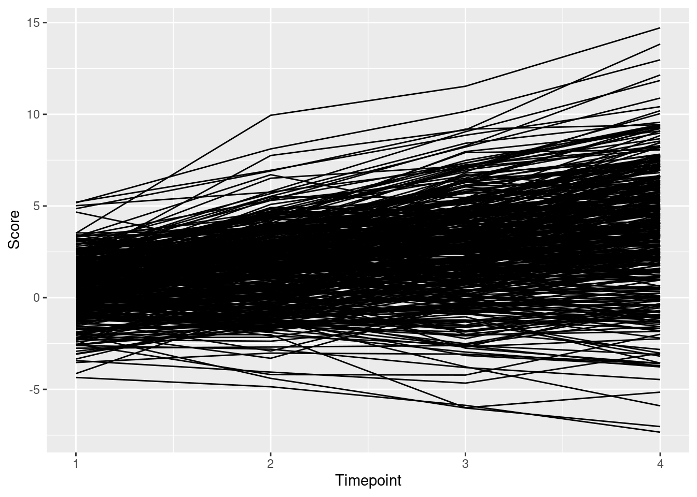
7 Latent Growth Curve Model
7.1 Model Syntax
7.1.1 Abbreviated
lgcm1_syntax <- '
# Intercept and slope
intercept =~ 1*t1 + 1*t2 + 1*t3 + 1*t4
slope =~ 0*t1 + 1*t2 + 2*t3 + 3*t4
# Regression paths
intercept ~ x1 + x2
slope ~ x1 + x2
# Time-varying covariates
t1 ~ c1
t2 ~ c2
t3 ~ c3
t4 ~ c4
'7.1.2 Full
lgcm2_syntax <- '
# Intercept and slope
intercept =~ 1*t1 + 1*t2 + 1*t3 + 1*t4
slope =~ 0*t1 + 1*t2 + 2*t3 + 3*t4
# Regression paths
intercept ~ x1 + x2
slope ~ x1 + x2
# Time-varying covariates
t1 ~ c1
t2 ~ c2
t3 ~ c3
t4 ~ c4
# Constrain observed intercepts to zero
t1 ~ 0
t2 ~ 0
t3 ~ 0
t4 ~ 0
# Estimate mean of intercept and slope
intercept ~ 1
slope ~ 1
'7.2 Fit the Model
7.2.1 Abbreviated
lgcm1_fit <- growth(
lgcm1_syntax,
data = Demo.growth,
missing = "ML",
estimator = "MLR",
meanstructure = TRUE,
int.ov.free = FALSE,
int.lv.free = TRUE,
fixed.x = FALSE,
em.h1.iter.max = 100000)Warning: lavaan->lav_partable_check():
automatically added intercepts are set to zero: ("x1", "x2", "c1", "c2",
"c3", "c4")7.2.2 Full
lgcm2_fit <- sem(
lgcm2_syntax,
data = Demo.growth,
missing = "ML",
estimator = "MLR",
meanstructure = TRUE,
fixed.x = FALSE,
em.h1.iter.max = 100000)7.3 Summary Output
7.3.1 Abbreviated
summary(
lgcm1_fit,
fit.measures = TRUE,
standardized = TRUE,
rsquare = TRUE)Warning: lavaan->lav_partable_check():
automatically added intercepts are set to zero: ("x1", "x2", "c1", "c2",
"c3", "c4")
Warning: lavaan->lav_partable_check():
automatically added intercepts are set to zero: ("x1", "x2", "c1", "c2",
"c3", "c4")lavaan 0.6-19 ended normally after 32 iterations
Estimator ML
Optimization method NLMINB
Number of model parameters 38
Number of observations 400
Number of missing patterns 1
Model Test User Model:
Standard Scaled
Test Statistic 40.774 40.982
Degrees of freedom 27 27
P-value (Chi-square) 0.043 0.041
Scaling correction factor 0.995
Yuan-Bentler correction (Mplus variant)
Model Test Baseline Model:
Test statistic 2345.885 2414.540
Degrees of freedom 30 30
P-value 0.000 0.000
Scaling correction factor 0.972
User Model versus Baseline Model:
Comparative Fit Index (CFI) 0.994 0.994
Tucker-Lewis Index (TLI) 0.993 0.993
Robust Comparative Fit Index (CFI) 0.992
Robust Tucker-Lewis Index (TLI) 0.992
Loglikelihood and Information Criteria:
Loglikelihood user model (H0) -5782.507 -5782.507
Scaling correction factor 0.991
for the MLR correction
Loglikelihood unrestricted model (H1) -5762.120 -5762.120
Scaling correction factor 0.993
for the MLR correction
Akaike (AIC) 11641.014 11641.014
Bayesian (BIC) 11792.690 11792.690
Sample-size adjusted Bayesian (SABIC) 11672.114 11672.114
Root Mean Square Error of Approximation:
RMSEA 0.036 0.036
90 Percent confidence interval - lower 0.006 0.007
90 Percent confidence interval - upper 0.057 0.057
P-value H_0: RMSEA <= 0.050 0.854 0.849
P-value H_0: RMSEA >= 0.080 0.000 0.000
Robust RMSEA 0.040
90 Percent confidence interval - lower 0.019
90 Percent confidence interval - upper 0.059
P-value H_0: Robust RMSEA <= 0.050 0.793
P-value H_0: Robust RMSEA >= 0.080 0.000
Standardized Root Mean Square Residual:
SRMR 0.030 0.030
Parameter Estimates:
Standard errors Sandwich
Information bread Observed
Observed information based on Hessian
Latent Variables:
Estimate Std.Err z-value P(>|z|) Std.lv Std.all
intercept =~
t1 1.000 1.386 0.875
t2 1.000 1.386 0.660
t3 1.000 1.386 0.507
t4 1.000 1.386 0.411
slope =~
t1 0.000 0.000 0.000
t2 1.000 0.769 0.366
t3 2.000 1.539 0.562
t4 3.000 2.308 0.685
Regressions:
Estimate Std.Err z-value P(>|z|) Std.lv Std.all
intercept ~
x1 0.608 0.059 10.275 0.000 0.439 0.453
x2 0.604 0.062 9.776 0.000 0.436 0.423
slope ~
x1 0.262 0.029 8.968 0.000 0.341 0.352
x2 0.522 0.032 16.302 0.000 0.678 0.658
t1 ~
c1 0.143 0.045 3.198 0.001 0.143 0.089
t2 ~
c2 0.289 0.047 6.215 0.000 0.289 0.131
t3 ~
c3 0.328 0.047 7.011 0.000 0.328 0.112
t4 ~
c4 0.330 0.057 5.814 0.000 0.330 0.090
Covariances:
Estimate Std.Err z-value P(>|z|) Std.lv Std.all
.intercept ~~
.slope 0.075 0.040 1.890 0.059 0.152 0.152
x1 ~~
x2 0.141 0.050 2.798 0.005 0.141 0.140
c1 -0.039 0.051 -0.762 0.446 -0.039 -0.038
c2 0.023 0.048 0.493 0.622 0.023 0.024
c3 0.027 0.050 0.544 0.586 0.027 0.028
c4 -0.023 0.045 -0.519 0.604 -0.023 -0.024
x2 ~~
c1 -0.018 0.050 -0.358 0.721 -0.018 -0.019
c2 -0.003 0.044 -0.075 0.940 -0.003 -0.004
c3 0.155 0.048 3.239 0.001 0.155 0.170
c4 -0.104 0.043 -2.421 0.015 -0.104 -0.116
c1 ~~
c2 0.080 0.045 1.793 0.073 0.080 0.086
c3 -0.030 0.050 -0.585 0.559 -0.030 -0.032
c4 0.127 0.048 2.668 0.008 0.127 0.140
c2 ~~
c3 0.003 0.041 0.078 0.938 0.003 0.004
c4 0.031 0.044 0.715 0.475 0.031 0.036
c3 ~~
c4 0.034 0.044 0.767 0.443 0.034 0.039
Intercepts:
Estimate Std.Err z-value P(>|z|) Std.lv Std.all
.intercept 0.580 0.061 9.501 0.000 0.419 0.419
.slope 0.958 0.030 32.177 0.000 1.244 1.244
Variances:
Estimate Std.Err z-value P(>|z|) Std.lv Std.all
.t1 0.580 0.091 6.386 0.000 0.580 0.231
.t2 0.596 0.056 10.627 0.000 0.596 0.135
.t3 0.481 0.051 9.434 0.000 0.481 0.064
.t4 0.535 0.094 5.709 0.000 0.535 0.047
.intercept 1.079 0.108 9.996 0.000 0.562 0.562
.slope 0.224 0.027 8.373 0.000 0.378 0.378
x1 1.064 0.068 15.614 0.000 1.064 1.000
x2 0.943 0.065 14.401 0.000 0.943 1.000
c1 0.972 0.064 15.306 0.000 0.972 1.000
c2 0.900 0.063 14.372 0.000 0.900 1.000
c3 0.876 0.067 13.041 0.000 0.876 1.000
c4 0.852 0.057 15.005 0.000 0.852 1.000
R-Square:
Estimate
t1 0.769
t2 0.865
t3 0.936
t4 0.953
intercept 0.438
slope 0.6227.3.2 Full
summary(
lgcm2_fit,
fit.measures = TRUE,
standardized = TRUE,
rsquare = TRUE)lavaan 0.6-19 ended normally after 31 iterations
Estimator ML
Optimization method NLMINB
Number of model parameters 44
Number of observations 400
Number of missing patterns 1
Model Test User Model:
Standard Scaled
Test Statistic 26.059 26.344
Degrees of freedom 21 21
P-value (Chi-square) 0.204 0.194
Scaling correction factor 0.989
Yuan-Bentler correction (Mplus variant)
Model Test Baseline Model:
Test statistic 2345.885 2414.540
Degrees of freedom 30 30
P-value 0.000 0.000
Scaling correction factor 0.972
User Model versus Baseline Model:
Comparative Fit Index (CFI) 0.998 0.998
Tucker-Lewis Index (TLI) 0.997 0.997
Robust Comparative Fit Index (CFI) 0.998
Robust Tucker-Lewis Index (TLI) 0.997
Loglikelihood and Information Criteria:
Loglikelihood user model (H0) -5775.149 -5775.149
Scaling correction factor 0.994
for the MLR correction
Loglikelihood unrestricted model (H1) -5762.120 -5762.120
Scaling correction factor 0.993
for the MLR correction
Akaike (AIC) 11638.299 11638.299
Bayesian (BIC) 11813.923 11813.923
Sample-size adjusted Bayesian (SABIC) 11674.308 11674.308
Root Mean Square Error of Approximation:
RMSEA 0.025 0.025
90 Percent confidence interval - lower 0.000 0.000
90 Percent confidence interval - upper 0.051 0.052
P-value H_0: RMSEA <= 0.050 0.938 0.933
P-value H_0: RMSEA >= 0.080 0.000 0.000
Robust RMSEA 0.024
90 Percent confidence interval - lower 0.000
90 Percent confidence interval - upper 0.051
P-value H_0: Robust RMSEA <= 0.050 0.940
P-value H_0: Robust RMSEA >= 0.080 0.000
Standardized Root Mean Square Residual:
SRMR 0.014 0.014
Parameter Estimates:
Standard errors Sandwich
Information bread Observed
Observed information based on Hessian
Latent Variables:
Estimate Std.Err z-value P(>|z|) Std.lv Std.all
intercept =~
t1 1.000 1.386 0.875
t2 1.000 1.386 0.660
t3 1.000 1.386 0.507
t4 1.000 1.386 0.412
slope =~
t1 0.000 0.000 0.000
t2 1.000 0.768 0.366
t3 2.000 1.536 0.562
t4 3.000 2.304 0.684
Regressions:
Estimate Std.Err z-value P(>|z|) Std.lv Std.all
intercept ~
x1 0.608 0.059 10.275 0.000 0.439 0.451
x2 0.604 0.062 9.776 0.000 0.436 0.419
slope ~
x1 0.262 0.029 8.968 0.000 0.341 0.351
x2 0.522 0.032 16.301 0.000 0.679 0.653
t1 ~
c1 0.143 0.045 3.198 0.001 0.143 0.089
t2 ~
c2 0.289 0.047 6.215 0.000 0.289 0.131
t3 ~
c3 0.328 0.047 7.011 0.000 0.328 0.112
t4 ~
c4 0.330 0.057 5.814 0.000 0.330 0.091
Covariances:
Estimate Std.Err z-value P(>|z|) Std.lv Std.all
.intercept ~~
.slope 0.075 0.040 1.890 0.059 0.152 0.152
x1 ~~
x2 0.153 0.049 3.129 0.002 0.153 0.155
c1 -0.038 0.050 -0.760 0.447 -0.038 -0.037
c2 0.026 0.048 0.547 0.585 0.026 0.027
c3 0.033 0.049 0.674 0.501 0.033 0.035
c4 -0.025 0.044 -0.560 0.575 -0.025 -0.026
x2 ~~
c1 -0.019 0.050 -0.377 0.706 -0.019 -0.020
c2 -0.007 0.044 -0.167 0.867 -0.007 -0.008
c3 0.145 0.048 3.055 0.002 0.145 0.162
c4 -0.102 0.043 -2.371 0.018 -0.102 -0.115
c1 ~~
c2 0.080 0.045 1.789 0.074 0.080 0.085
c3 -0.030 0.050 -0.596 0.551 -0.030 -0.033
c4 0.128 0.048 2.669 0.008 0.128 0.140
c2 ~~
c3 0.001 0.042 0.030 0.976 0.001 0.001
c4 0.032 0.044 0.729 0.466 0.032 0.036
c3 ~~
c4 0.035 0.044 0.796 0.426 0.035 0.041
Intercepts:
Estimate Std.Err z-value P(>|z|) Std.lv Std.all
.t1 0.000 0.000 0.000
.t2 0.000 0.000 0.000
.t3 0.000 0.000 0.000
.t4 0.000 0.000 0.000
.intercept 0.580 0.061 9.501 0.000 0.419 0.419
.slope 0.958 0.030 32.177 0.000 1.247 1.247
x1 -0.092 0.051 -1.793 0.073 -0.092 -0.090
x2 0.138 0.048 2.878 0.004 0.138 0.144
c1 0.008 0.049 0.158 0.874 0.008 0.008
c2 0.029 0.047 0.610 0.542 0.029 0.031
c3 0.068 0.047 1.449 0.147 0.068 0.072
c4 -0.018 0.046 -0.390 0.696 -0.018 -0.020
Variances:
Estimate Std.Err z-value P(>|z|) Std.lv Std.all
.t1 0.580 0.091 6.386 0.000 0.580 0.231
.t2 0.596 0.056 10.627 0.000 0.596 0.135
.t3 0.481 0.051 9.434 0.000 0.481 0.064
.t4 0.535 0.094 5.709 0.000 0.535 0.047
.intercept 1.079 0.108 9.996 0.000 0.562 0.562
.slope 0.224 0.027 8.373 0.000 0.379 0.379
x1 1.056 0.068 15.511 0.000 1.056 1.000
x2 0.924 0.065 14.153 0.000 0.924 1.000
c1 0.972 0.063 15.321 0.000 0.972 1.000
c2 0.899 0.062 14.432 0.000 0.899 1.000
c3 0.872 0.067 13.018 0.000 0.872 1.000
c4 0.851 0.057 15.001 0.000 0.851 1.000
R-Square:
Estimate
t1 0.769
t2 0.865
t3 0.936
t4 0.953
intercept 0.438
slope 0.6217.4 Estimates of Model Fit
fitMeasures(
lgcm1_fit,
fit.measures = c(
"chisq", "df", "pvalue",
"chisq.scaled", "df.scaled", "pvalue.scaled",
"chisq.scaling.factor",
"baseline.chisq","baseline.df","baseline.pvalue",
"rmsea", "cfi", "tli", "srmr",
"rmsea.robust", "cfi.robust", "tli.robust"))Warning: lavaan->lav_partable_check():
automatically added intercepts are set to zero: ("x1", "x2", "c1", "c2",
"c3", "c4")
Warning: lavaan->lav_partable_check():
automatically added intercepts are set to zero: ("x1", "x2", "c1", "c2",
"c3", "c4") chisq df pvalue
40.774 27.000 0.043
chisq.scaled df.scaled pvalue.scaled
40.982 27.000 0.041
chisq.scaling.factor baseline.chisq baseline.df
0.995 2345.885 30.000
baseline.pvalue rmsea cfi
0.000 0.036 0.994
tli srmr rmsea.robust
0.993 0.030 0.040
cfi.robust tli.robust
0.992 0.992 7.5 Residuals of Observed vs. Model-Implied Correlation Matrix
residuals(
lgcm1_fit,
type = "cor")$type
[1] "cor.bollen"
$cov
t1 t2 t3 t4 x1 x2 c1 c2 c3 c4
t1 0.000
t2 0.010 0.000
t3 -0.013 -0.001 0.000
t4 0.012 0.002 0.002 0.000
x1 0.007 0.004 0.002 0.010 0.000
x2 -0.006 0.005 0.002 -0.002 0.015 0.000
c1 0.006 0.018 0.001 0.056 0.001 -0.001 0.000
c2 0.006 -0.005 -0.007 -0.005 0.003 -0.004 0.000 0.000
c3 0.046 0.018 0.030 0.030 0.007 -0.008 -0.001 -0.002 0.000
c4 0.038 0.027 0.001 0.006 -0.002 0.002 0.000 0.001 0.002 0.000
$mean
t1 t2 t3 t4 x1 x2 c1 c2 c3 c4
0.009 0.064 0.036 0.055 -0.090 0.144 0.008 0.031 0.072 -0.020 7.6 Modification Indices
modificationindices(
lgcm1_fit,
sort. = TRUE)7.7 Internal Consistency Reliability
compRelSEM(lgcm1_fit)named numeric(0)7.8 Path Diagram
semPaths(
lgcm1_fit,
what = "Std.all",
layout = "tree2",
edge.label.cex = 1.5)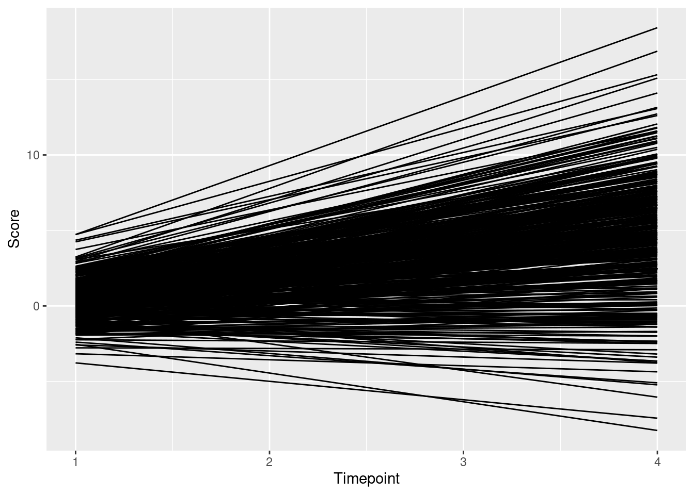
7.9 Plot Trajectories
7.9.1 Protoypical Growth Curve
Calculated from intercept and slope parameters:
lgcm1_intercept <- coef(lgcm1_fit)["intercept~1"]
lgcm1_slope <- coef(lgcm1_fit)["slope~1"]
ggplot() +
xlab("Timepoint") +
ylab("Score") +
scale_x_continuous(
limits = c(0, 3),
labels = 1:4) +
scale_y_continuous(
limits = c(0, 5)) +
geom_abline(
mapping = aes(
slope = lgcm1_slope,
intercept = lgcm1_intercept))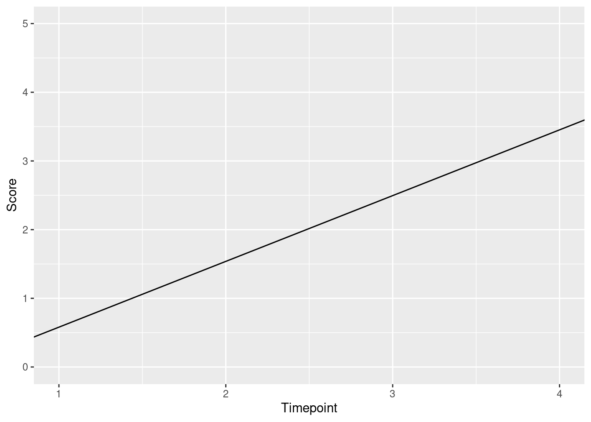
Calculated manually:
timepoints <- 4
newData <- expand.grid(
time = c(1, 4)
)
newData$predictedValue <- NA
newData$predictedValue[which(newData$time == 1)] <- lgcm1_intercept
newData$predictedValue[which(newData$time == 4)] <- lgcm1_intercept + (timepoints - 1)*lgcm1_slope
ggplot(
data = newData,
mapping = aes(x = time, y = predictedValue)) +
xlab("Timepoint") +
ylab("Score") +
scale_y_continuous(
limits = c(0, 5)) +
geom_line()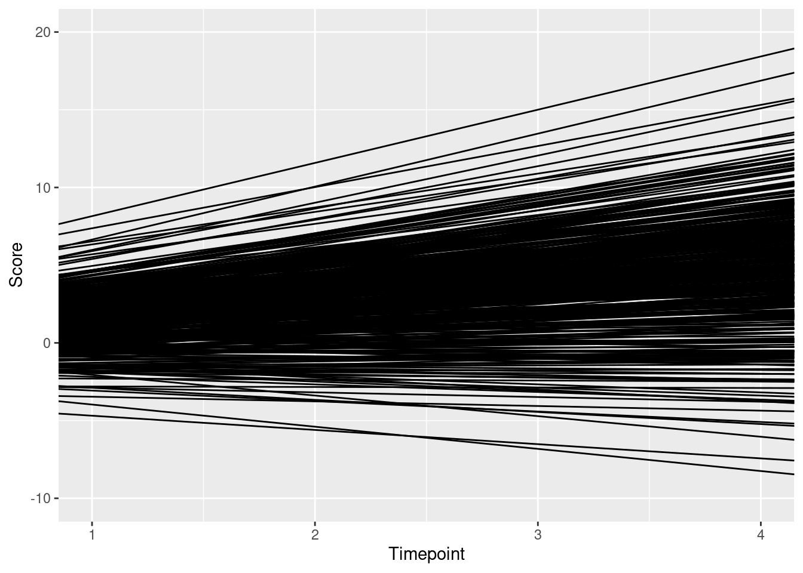
7.9.2 Individuals’ Growth Curves
Calculated from intercept and slope parameters:
newData <- as.data.frame(predict(lgcm1_fit))
newData$id <- row.names(newData)
ggplot(
data = newData) +
xlab("Timepoint") +
ylab("Score") +
scale_x_continuous(
limits = c(0, 3),
labels = 1:4) +
scale_y_continuous(
limits = c(-10, 20)) +
geom_abline(
mapping = aes(
slope = slope,
intercept = intercept))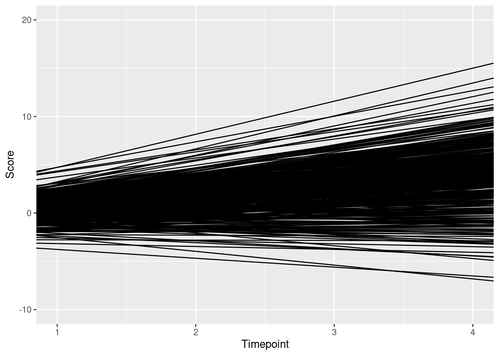
Calculated manually:
newData$t1 <- newData$intercept
newData$t4 <- newData$intercept + (timepoints - 1)*newData$slope
newData2 <- pivot_longer(
newData,
cols = c(t1, t4)) %>%
select(-intercept, -slope)
newData2$time <- NA
newData2$time[which(newData2$name == "t1")] <- 1
newData2$time[which(newData2$name == "t4")] <- 4
ggplot(
data = newData2,
mapping = aes(x = time, y = value, group = factor(id))) +
xlab("Timepoint") +
ylab("Score") +
scale_y_continuous(
limits = c(-10, 20)) +
geom_line()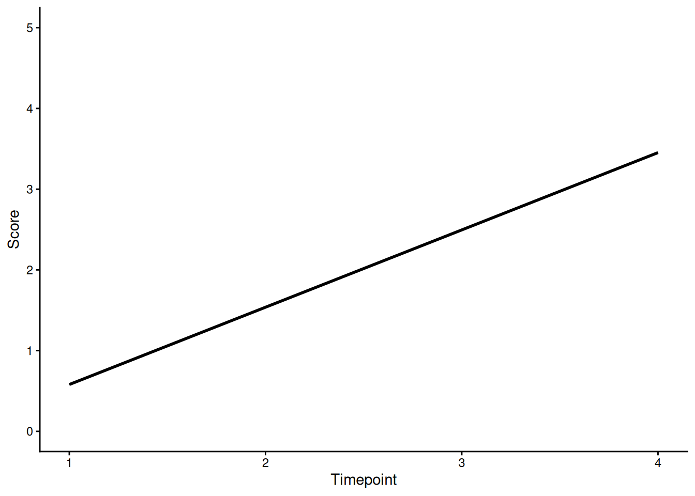
7.9.3 Individuals’ Trajectories Overlaid with Prototypical Trajectory
newData <- as.data.frame(predict(lgcm1_fit))
newData$id <- row.names(newData)
ggplot(
data = newData) +
xlab("Timepoint") +
ylab("Score") +
scale_x_continuous(
limits = c(0, 3),
labels = 1:4) +
scale_y_continuous(
limits = c(-10, 20)) +
geom_abline(
mapping = aes(
slope = slope,
intercept = intercept)) +
geom_abline(
mapping = aes(
slope = lgcm1_slope,
intercept = lgcm1_intercept),
color = "blue",
linewidth = 2)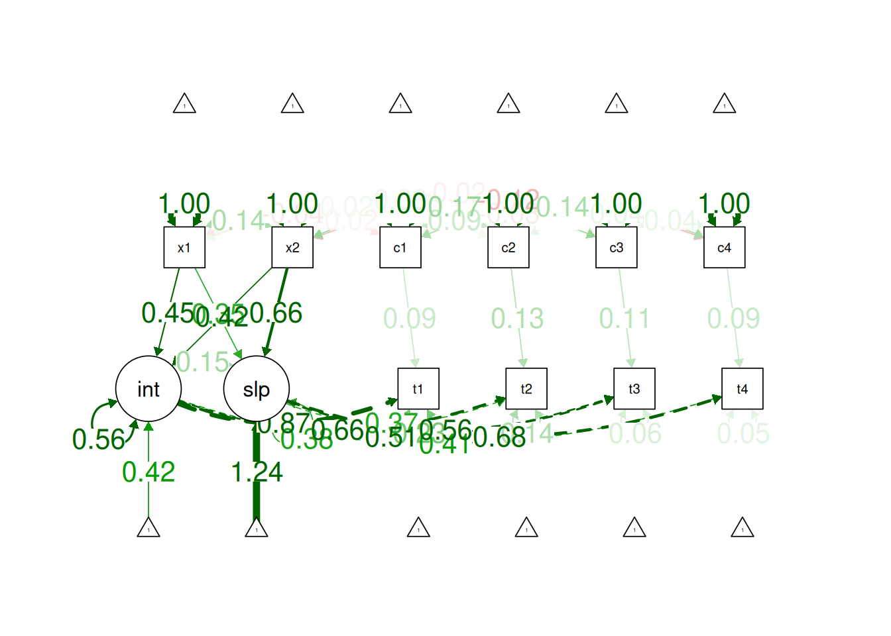
8 Latent Change Score Model
8.1 Model Syntax
bivariateLCSM_syntax <- specify_bi_lcsm(
timepoints = 10,
var_x = "x",
model_x = list(
alpha_constant = TRUE, # alpha = intercept (constant change factor)
beta = TRUE, # beta = proportional change factor (latent true score predicting its change score)
phi = TRUE), # phi = autoregression of change scores
var_y = "y",
model_y = list(
alpha_constant = TRUE, # alpha = intercept (constant change factor)
beta = TRUE, # beta = proportional change factor (latent true score predicting its change score)
phi = TRUE), # phi = autoregression of change scores
coupling = list(
delta_lag_xy = TRUE,
delta_lag_yx = TRUE),
change_letter_x = "g",
change_letter_y = "j")
cat(bivariateLCSM_syntax)# # # # # # # # # # # # # # # # # # # # #
# Specify parameters for construct x ----
# # # # # # # # # # # # # # # # # # # # #
# Specify latent true scores
lx1 =~ 1 * x1
lx2 =~ 1 * x2
lx3 =~ 1 * x3
lx4 =~ 1 * x4
lx5 =~ 1 * x5
lx6 =~ 1 * x6
lx7 =~ 1 * x7
lx8 =~ 1 * x8
lx9 =~ 1 * x9
lx10 =~ 1 * x10
# Specify mean of latent true scores
lx1 ~ gamma_lx1 * 1
lx2 ~ 0 * 1
lx3 ~ 0 * 1
lx4 ~ 0 * 1
lx5 ~ 0 * 1
lx6 ~ 0 * 1
lx7 ~ 0 * 1
lx8 ~ 0 * 1
lx9 ~ 0 * 1
lx10 ~ 0 * 1
# Specify variance of latent true scores
lx1 ~~ sigma2_lx1 * lx1
lx2 ~~ 0 * lx2
lx3 ~~ 0 * lx3
lx4 ~~ 0 * lx4
lx5 ~~ 0 * lx5
lx6 ~~ 0 * lx6
lx7 ~~ 0 * lx7
lx8 ~~ 0 * lx8
lx9 ~~ 0 * lx9
lx10 ~~ 0 * lx10
# Specify intercept of obseved scores
x1 ~ 0 * 1
x2 ~ 0 * 1
x3 ~ 0 * 1
x4 ~ 0 * 1
x5 ~ 0 * 1
x6 ~ 0 * 1
x7 ~ 0 * 1
x8 ~ 0 * 1
x9 ~ 0 * 1
x10 ~ 0 * 1
# Specify variance of observed scores
x1 ~~ sigma2_ux * x1
x2 ~~ sigma2_ux * x2
x3 ~~ sigma2_ux * x3
x4 ~~ sigma2_ux * x4
x5 ~~ sigma2_ux * x5
x6 ~~ sigma2_ux * x6
x7 ~~ sigma2_ux * x7
x8 ~~ sigma2_ux * x8
x9 ~~ sigma2_ux * x9
x10 ~~ sigma2_ux * x10
# Specify autoregressions of latent variables
lx2 ~ 1 * lx1
lx3 ~ 1 * lx2
lx4 ~ 1 * lx3
lx5 ~ 1 * lx4
lx6 ~ 1 * lx5
lx7 ~ 1 * lx6
lx8 ~ 1 * lx7
lx9 ~ 1 * lx8
lx10 ~ 1 * lx9
# Specify latent change scores
dx2 =~ 1 * lx2
dx3 =~ 1 * lx3
dx4 =~ 1 * lx4
dx5 =~ 1 * lx5
dx6 =~ 1 * lx6
dx7 =~ 1 * lx7
dx8 =~ 1 * lx8
dx9 =~ 1 * lx9
dx10 =~ 1 * lx10
# Specify latent change scores means
dx2 ~ 0 * 1
dx3 ~ 0 * 1
dx4 ~ 0 * 1
dx5 ~ 0 * 1
dx6 ~ 0 * 1
dx7 ~ 0 * 1
dx8 ~ 0 * 1
dx9 ~ 0 * 1
dx10 ~ 0 * 1
# Specify latent change scores variances
dx2 ~~ 0 * dx2
dx3 ~~ 0 * dx3
dx4 ~~ 0 * dx4
dx5 ~~ 0 * dx5
dx6 ~~ 0 * dx6
dx7 ~~ 0 * dx7
dx8 ~~ 0 * dx8
dx9 ~~ 0 * dx9
dx10 ~~ 0 * dx10
# Specify constant change factor
g2 =~ 1 * dx2 + 1 * dx3 + 1 * dx4 + 1 * dx5 + 1 * dx6 + 1 * dx7 + 1 * dx8 + 1 * dx9 + 1 * dx10
# Specify constant change factor mean
g2 ~ alpha_g2 * 1
# Specify constant change factor variance
g2 ~~ sigma2_g2 * g2
# Specify constant change factor covariance with the initial true score
g2 ~~ sigma_g2lx1 * lx1
# Specify proportional change component
dx2 ~ beta_x * lx1
dx3 ~ beta_x * lx2
dx4 ~ beta_x * lx3
dx5 ~ beta_x * lx4
dx6 ~ beta_x * lx5
dx7 ~ beta_x * lx6
dx8 ~ beta_x * lx7
dx9 ~ beta_x * lx8
dx10 ~ beta_x * lx9
# Specify autoregression of change score
dx3 ~ phi_x * dx2
dx4 ~ phi_x * dx3
dx5 ~ phi_x * dx4
dx6 ~ phi_x * dx5
dx7 ~ phi_x * dx6
dx8 ~ phi_x * dx7
dx9 ~ phi_x * dx8
dx10 ~ phi_x * dx9
# # # # # # # # # # # # # # # # # # # # #
# Specify parameters for construct y ----
# # # # # # # # # # # # # # # # # # # # #
# Specify latent true scores
ly1 =~ 1 * y1
ly2 =~ 1 * y2
ly3 =~ 1 * y3
ly4 =~ 1 * y4
ly5 =~ 1 * y5
ly6 =~ 1 * y6
ly7 =~ 1 * y7
ly8 =~ 1 * y8
ly9 =~ 1 * y9
ly10 =~ 1 * y10
# Specify mean of latent true scores
ly1 ~ gamma_ly1 * 1
ly2 ~ 0 * 1
ly3 ~ 0 * 1
ly4 ~ 0 * 1
ly5 ~ 0 * 1
ly6 ~ 0 * 1
ly7 ~ 0 * 1
ly8 ~ 0 * 1
ly9 ~ 0 * 1
ly10 ~ 0 * 1
# Specify variance of latent true scores
ly1 ~~ sigma2_ly1 * ly1
ly2 ~~ 0 * ly2
ly3 ~~ 0 * ly3
ly4 ~~ 0 * ly4
ly5 ~~ 0 * ly5
ly6 ~~ 0 * ly6
ly7 ~~ 0 * ly7
ly8 ~~ 0 * ly8
ly9 ~~ 0 * ly9
ly10 ~~ 0 * ly10
# Specify intercept of obseved scores
y1 ~ 0 * 1
y2 ~ 0 * 1
y3 ~ 0 * 1
y4 ~ 0 * 1
y5 ~ 0 * 1
y6 ~ 0 * 1
y7 ~ 0 * 1
y8 ~ 0 * 1
y9 ~ 0 * 1
y10 ~ 0 * 1
# Specify variance of observed scores
y1 ~~ sigma2_uy * y1
y2 ~~ sigma2_uy * y2
y3 ~~ sigma2_uy * y3
y4 ~~ sigma2_uy * y4
y5 ~~ sigma2_uy * y5
y6 ~~ sigma2_uy * y6
y7 ~~ sigma2_uy * y7
y8 ~~ sigma2_uy * y8
y9 ~~ sigma2_uy * y9
y10 ~~ sigma2_uy * y10
# Specify autoregressions of latent variables
ly2 ~ 1 * ly1
ly3 ~ 1 * ly2
ly4 ~ 1 * ly3
ly5 ~ 1 * ly4
ly6 ~ 1 * ly5
ly7 ~ 1 * ly6
ly8 ~ 1 * ly7
ly9 ~ 1 * ly8
ly10 ~ 1 * ly9
# Specify latent change scores
dy2 =~ 1 * ly2
dy3 =~ 1 * ly3
dy4 =~ 1 * ly4
dy5 =~ 1 * ly5
dy6 =~ 1 * ly6
dy7 =~ 1 * ly7
dy8 =~ 1 * ly8
dy9 =~ 1 * ly9
dy10 =~ 1 * ly10
# Specify latent change scores means
dy2 ~ 0 * 1
dy3 ~ 0 * 1
dy4 ~ 0 * 1
dy5 ~ 0 * 1
dy6 ~ 0 * 1
dy7 ~ 0 * 1
dy8 ~ 0 * 1
dy9 ~ 0 * 1
dy10 ~ 0 * 1
# Specify latent change scores variances
dy2 ~~ 0 * dy2
dy3 ~~ 0 * dy3
dy4 ~~ 0 * dy4
dy5 ~~ 0 * dy5
dy6 ~~ 0 * dy6
dy7 ~~ 0 * dy7
dy8 ~~ 0 * dy8
dy9 ~~ 0 * dy9
dy10 ~~ 0 * dy10
# Specify constant change factor
j2 =~ 1 * dy2 + 1 * dy3 + 1 * dy4 + 1 * dy5 + 1 * dy6 + 1 * dy7 + 1 * dy8 + 1 * dy9 + 1 * dy10
# Specify constant change factor mean
j2 ~ alpha_j2 * 1
# Specify constant change factor variance
j2 ~~ sigma2_j2 * j2
# Specify constant change factor covariance with the initial true score
j2 ~~ sigma_j2ly1 * ly1
# Specify proportional change component
dy2 ~ beta_y * ly1
dy3 ~ beta_y * ly2
dy4 ~ beta_y * ly3
dy5 ~ beta_y * ly4
dy6 ~ beta_y * ly5
dy7 ~ beta_y * ly6
dy8 ~ beta_y * ly7
dy9 ~ beta_y * ly8
dy10 ~ beta_y * ly9
# Specify autoregression of change score
dy3 ~ phi_y * dy2
dy4 ~ phi_y * dy3
dy5 ~ phi_y * dy4
dy6 ~ phi_y * dy5
dy7 ~ phi_y * dy6
dy8 ~ phi_y * dy7
dy9 ~ phi_y * dy8
dy10 ~ phi_y * dy9
# Specify residual covariances
x1 ~~ sigma_su * y1
x2 ~~ sigma_su * y2
x3 ~~ sigma_su * y3
x4 ~~ sigma_su * y4
x5 ~~ sigma_su * y5
x6 ~~ sigma_su * y6
x7 ~~ sigma_su * y7
x8 ~~ sigma_su * y8
x9 ~~ sigma_su * y9
x10 ~~ sigma_su * y10
# # # # # # # # # # # # # # # # # # # # # # # # # # # # # # # # # # # # # # # # # # # # # # # # # # # # # # # # # # # # # # # #
# Specify covariances betweeen specified change components (alpha) and intercepts (initial latent true scores lx1 and ly1) ----
# # # # # # # # # # # # # # # # # # # # # # # # # # # # # # # # # # # # # # # # # # # # # # # # # # # # # # # # # # # # # # # #
# Specify covariance of intercepts
lx1 ~~ sigma_ly1lx1 * ly1
# Specify covariance of constant change and intercept between constructs
ly1 ~~ sigma_g2ly1 * g2
# Specify covariance of constant change and intercept between constructs
lx1 ~~ sigma_j2lx1 * j2
# Specify covariance of constant change factors between constructs
g2 ~~ sigma_j2g2 * j2
# # # # # # # # # # # # # # # # # # # # # # # # # # #
# Specify between-construct coupling parameters ----
# # # # # # # # # # # # # # # # # # # # # # # # # # #
# Change score x (t) is determined by true score y (t-1)
dx2 ~ delta_lag_xy * ly1
dx3 ~ delta_lag_xy * ly2
dx4 ~ delta_lag_xy * ly3
dx5 ~ delta_lag_xy * ly4
dx6 ~ delta_lag_xy * ly5
dx7 ~ delta_lag_xy * ly6
dx8 ~ delta_lag_xy * ly7
dx9 ~ delta_lag_xy * ly8
dx10 ~ delta_lag_xy * ly9
# Change score y (t) is determined by true score x (t-1)
dy2 ~ delta_lag_yx * lx1
dy3 ~ delta_lag_yx * lx2
dy4 ~ delta_lag_yx * lx3
dy5 ~ delta_lag_yx * lx4
dy6 ~ delta_lag_yx * lx5
dy7 ~ delta_lag_yx * lx6
dy8 ~ delta_lag_yx * lx7
dy9 ~ delta_lag_yx * lx8
dy10 ~ delta_lag_yx * lx9 8.2 Fit the Model
bivariateLCSM_fit <- fit_bi_lcsm(
data = data_bi_lcsm,
var_x = names(data_bi_lcsm)[2:4],
var_y = names(data_bi_lcsm)[12:14],
model_x = list(
alpha_constant = TRUE, # alpha = intercept (constant change factor)
beta = TRUE, # beta = proportional change factor (latent true score predicting its change score)
phi = FALSE), # phi = autoregression of change scores
model_y = list(
alpha_constant = TRUE, # alpha = intercept (constant change factor)
beta = TRUE, # beta = proportional change factor (latent true score predicting its change score)
phi = TRUE), # phi = autoregression of change scores
coupling = list(
delta_lag_xy = TRUE,
xi_lag_yx = TRUE),
fixed.x = FALSE
)Warning: lavaan->lav_model_vcov():
The variance-covariance matrix of the estimated parameters (vcov) does not
appear to be positive definite! The smallest eigenvalue (= 9.893222e-18)
is close to zero. This may be a symptom that the model is not identified.8.3 Summary Output
summary(
bivariateLCSM_fit,
fit.measures = TRUE,
standardized = TRUE,
rsquare = TRUE)lavaan 0.6-19 ended normally after 137 iterations
Estimator ML
Optimization method NLMINB
Number of model parameters 31
Number of equality constraints 9
Number of observations 500
Number of missing patterns 23
Model Test User Model:
Standard Scaled
Test Statistic 6.870 5.971
Degrees of freedom 5 5
P-value (Chi-square) 0.230 0.309
Scaling correction factor 1.151
Yuan-Bentler correction (Mplus variant)
Model Test Baseline Model:
Test statistic 1435.712 1483.655
Degrees of freedom 15 15
P-value 0.000 0.000
Scaling correction factor 0.968
User Model versus Baseline Model:
Comparative Fit Index (CFI) 0.999 0.999
Tucker-Lewis Index (TLI) 0.996 0.998
Robust Comparative Fit Index (CFI) 0.999
Robust Tucker-Lewis Index (TLI) 0.998
Loglikelihood and Information Criteria:
Loglikelihood user model (H0) -2973.817 -2973.817
Scaling correction factor 0.660
for the MLR correction
Loglikelihood unrestricted model (H1) -2970.382 -2970.382
Scaling correction factor 0.971
for the MLR correction
Akaike (AIC) 5991.634 5991.634
Bayesian (BIC) 6084.355 6084.355
Sample-size adjusted Bayesian (SABIC) 6014.526 6014.526
Root Mean Square Error of Approximation:
RMSEA 0.027 0.020
90 Percent confidence interval - lower 0.000 0.000
90 Percent confidence interval - upper 0.072 0.065
P-value H_0: RMSEA <= 0.050 0.751 0.835
P-value H_0: RMSEA >= 0.080 0.023 0.009
Robust RMSEA 0.022
90 Percent confidence interval - lower 0.000
90 Percent confidence interval - upper 0.078
P-value H_0: Robust RMSEA <= 0.050 0.731
P-value H_0: Robust RMSEA >= 0.080 0.044
Standardized Root Mean Square Residual:
SRMR 0.031 0.031
Parameter Estimates:
Standard errors Sandwich
Information bread Observed
Observed information based on Hessian
Latent Variables:
Estimate Std.Err z-value P(>|z|) Std.lv Std.all
lx1 =~
x1 1.000 0.719 0.867
lx2 =~
x2 1.000 1.069 0.933
lx3 =~
x3 1.000 1.559 0.967
dx2 =~
lx2 1.000 0.600 0.600
dx3 =~
lx3 1.000 0.374 0.374
g2 =~
dx2 1.000 1.018 1.018
dx3 1.000 1.119 1.119
ly1 =~
y1 1.000 0.485 0.755
ly2 =~
y2 1.000 0.506 0.769
ly3 =~
y3 1.000 0.756 0.874
dy2 =~
ly2 1.000 0.619 0.619
dy3 =~
ly3 1.000 0.510 0.510
j2 =~
dy2 1.000 1.452 1.452
dy3 1.000 1.181 1.181
Regressions:
Estimate Std.Err z-value P(>|z|) Std.lv Std.all
lx2 ~
lx1 1.000 0.673 0.673
lx3 ~
lx2 1.000 0.685 0.685
dx2 ~
lx1 (bt_x) -0.090 0.064 -1.409 0.159 -0.101 -0.101
dx3 ~
lx2 (bt_x) -0.090 0.064 -1.409 0.159 -0.166 -0.166
ly2 ~
ly1 1.000 0.958 0.958
ly3 ~
ly2 1.000 0.669 0.669
dy2 ~
ly1 (bt_y) 0.536 0.336 1.596 0.110 0.830 0.830
dy3 ~
ly2 (bt_y) 0.536 0.336 1.596 0.110 0.705 0.705
dy2 (ph_y) -0.442 0.359 -1.229 0.219 -0.359 -0.359
dx2 ~
ly1 (dl__) 0.055 0.109 0.506 0.613 0.042 0.042
dx3 ~
ly2 (dl__) 0.055 0.109 0.506 0.613 0.048 0.048
dy3 ~
dx2 (x_l_) 0.269 0.080 3.370 0.001 0.448 0.448
Covariances:
Estimate Std.Err z-value P(>|z|) Std.lv Std.all
lx1 ~~
g2 (sgm_g2lx1) 0.143 0.030 4.761 0.000 0.304 0.304
ly1 ~~
j2 (sgm_j2ly1) -0.165 0.081 -2.019 0.044 -0.746 -0.746
.x1 ~~
.y1 (sgm_) 0.011 0.009 1.275 0.202 0.011 0.063
.x2 ~~
.y2 (sgm_) 0.011 0.009 1.275 0.202 0.011 0.063
.x3 ~~
.y3 (sgm_) 0.011 0.009 1.275 0.202 0.011 0.063
lx1 ~~
l1 (s_11) 0.196 0.026 7.639 0.000 0.562 0.562
g2 ~~
l1 (sgm_g2ly1) 0.070 0.025 2.758 0.006 0.222 0.222
lx1 ~~
j2 (sgm_j2lx1) -0.056 0.058 -0.968 0.333 -0.173 -0.173
g2 ~~
j2 (s_22) -0.029 0.041 -0.711 0.477 -0.099 -0.099
Intercepts:
Estimate Std.Err z-value P(>|z|) Std.lv Std.all
lx1 (gmm_lx1) 21.079 0.038 559.652 0.000 29.307 29.307
.lx2 0.000 0.000 0.000
.lx3 0.000 0.000 0.000
.x1 0.000 0.000 0.000
.x2 0.000 0.000 0.000
.x3 0.000 0.000 0.000
.dx2 0.000 0.000 0.000
.dx3 0.000 0.000 0.000
g2 (alph_g2) -0.250 0.856 -0.292 0.770 -0.383 -0.383
ly1 (gmm_ly1) 5.027 0.030 167.731 0.000 10.373 10.373
.ly2 0.000 0.000 0.000
.ly3 0.000 0.000 0.000
.y1 0.000 0.000 0.000
.y2 0.000 0.000 0.000
.y3 0.000 0.000 0.000
.dy2 0.000 0.000 0.000
.dy3 0.000 0.000 0.000
j2 (alph_j2) -3.891 1.341 -2.902 0.004 -8.551 -8.551
Variances:
Estimate Std.Err z-value P(>|z|) Std.lv Std.all
lx1 (sgm2_lx1) 0.517 0.042 12.414 0.000 1.000 1.000
.lx2 0.000 0.000 0.000
.lx3 0.000 0.000 0.000
.x1 (sgm2_x) 0.171 0.011 15.607 0.000 0.171 0.248
.x2 (sgm2_x) 0.171 0.011 15.607 0.000 0.171 0.130
.x3 (sgm2_x) 0.171 0.011 15.607 0.000 0.171 0.066
.dx2 0.000 0.000 0.000
.dx3 0.000 0.000 0.000
g2 (sgm2_g2) 0.426 0.045 9.376 0.000 1.000 1.000
ly1 (sgm2_ly1) 0.235 0.028 8.532 0.000 1.000 1.000
.ly2 0.000 0.000 0.000
.ly3 0.000 0.000 0.000
.y1 (sgm2_y) 0.177 0.012 14.979 0.000 0.177 0.429
.y2 (sgm2_y) 0.177 0.012 14.979 0.000 0.177 0.408
.y3 (sgm2_y) 0.177 0.012 14.979 0.000 0.177 0.236
.dy2 0.000 0.000 0.000
.dy3 0.000 0.000 0.000
j2 (sgm2_j2) 0.207 0.120 1.722 0.085 1.000 1.000
R-Square:
Estimate
lx2 1.000
lx3 1.000
x1 0.752
x2 0.870
x3 0.934
dx2 1.000
dx3 1.000
ly2 1.000
ly3 1.000
y1 0.571
y2 0.592
y3 0.764
dy2 1.000
dy3 1.0008.4 Estimates of Model Fit
fitMeasures(
bivariateLCSM_fit,
fit.measures = c(
"chisq", "df", "pvalue",
"chisq.scaled", "df.scaled", "pvalue.scaled",
"chisq.scaling.factor",
"baseline.chisq","baseline.df","baseline.pvalue",
"rmsea", "cfi", "tli", "srmr",
"rmsea.robust", "cfi.robust", "tli.robust")) chisq df pvalue
6.870 5.000 0.230
chisq.scaled df.scaled pvalue.scaled
5.971 5.000 0.309
chisq.scaling.factor baseline.chisq baseline.df
1.151 1435.712 15.000
baseline.pvalue rmsea cfi
0.000 0.027 0.999
tli srmr rmsea.robust
0.996 0.031 0.022
cfi.robust tli.robust
0.999 0.998 8.5 Residuals of Observed vs. Model-Implied Correlation Matrix
residuals(
bivariateLCSM_fit,
type = "cor")$type
[1] "cor.bollen"
$cov
x1 x2 x3 y1 y2 y3
x1 0.000
x2 -0.002 0.000
x3 -0.002 0.001 0.000
y1 0.031 -0.017 0.018 0.000
y2 -0.013 -0.035 -0.004 -0.001 0.000
y3 0.013 0.000 0.006 0.010 -0.006 0.000
$mean
x1 x2 x3 y1 y2 y3
-0.001 0.001 0.000 0.000 -0.004 0.001 8.6 Modification Indices
modificationindices(
bivariateLCSM_fit,
sort. = TRUE)Warning: lavaan->modificationindices():
the modindices() function ignores equality constraints; use lavTestScore()
to assess the impact of releasing one or multiple constraints.8.7 Path Diagram
semPaths(
bivariateLCSM_fit,
what = "Std.all",
layout = "tree2",
edge.label.cex = 1.5)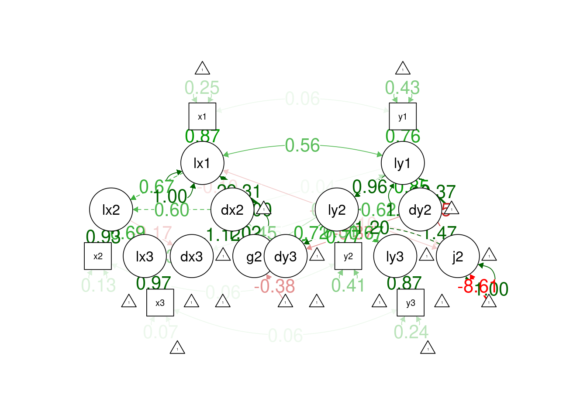
plot_lcsm(
lavaan_object = bivariateLCSM_fit,
lcsm = "bivariate",
lavaan_syntax = bivariateLCSM_syntax)8.8 Plot Trajectories
plot_trajectories(
data_bi_lcsm,
id_var = "id",
var_list = c("y1", "y2", "y3", "y4", "y5",
"y6", "y7", "y8", "y9", "y10"),
xlab = "Time",
ylab = "Y Score",
connect_missing = FALSE)Warning: Removed 111 rows containing missing values or values outside the scale range
(`geom_line()`).Warning: Removed 505 rows containing missing values or values outside the scale range
(`geom_point()`).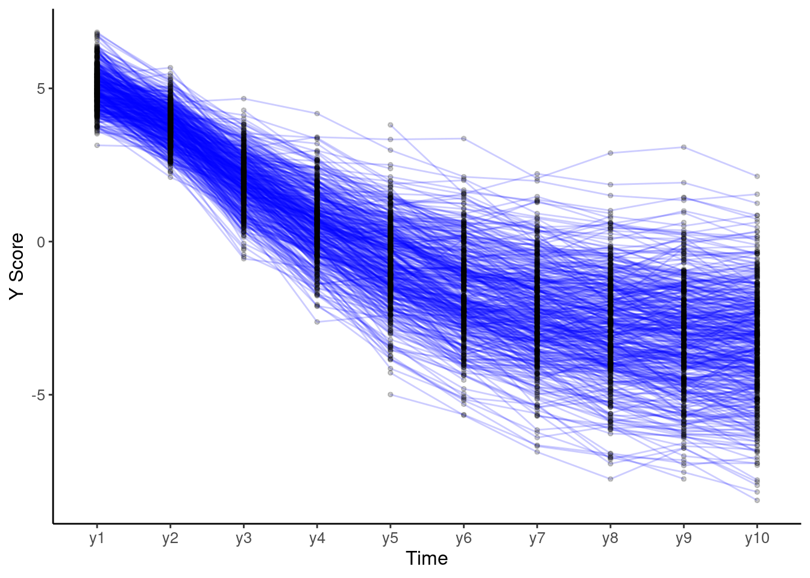
9 Cross-Lagged Panel Model
9.1 Model Syntax
clpm_syntax <- '
# Autoregressive Paths
t4 ~ t3
t3 ~ t2
t2 ~ t1
c4 ~ c3
c3 ~ c2
c2 ~ c1
# Concurrent Covariances
t1 ~~ c1
t2 ~~ c2
t3 ~~ c3
t4 ~~ c4
# Cross-Lagged Paths
t4 ~ c3
t3 ~ c2
t2 ~ c1
c4 ~ t3
c3 ~ t2
c2 ~ t1
'9.2 Fit the Model
clpm_fit <- sem(
clpm_syntax,
data = Demo.growth,
missing = "ML",
estimator = "MLR",
meanstructure = TRUE,
std.lv = TRUE,
fixed.x = FALSE,
em.h1.iter.max = 100000)9.3 Summary Output
summary(
clpm_fit,
fit.measures = TRUE,
standardized = TRUE,
rsquare = TRUE)lavaan 0.6-19 ended normally after 25 iterations
Estimator ML
Optimization method NLMINB
Number of model parameters 32
Number of observations 400
Number of missing patterns 1
Model Test User Model:
Standard Scaled
Test Statistic 55.624 54.099
Degrees of freedom 12 12
P-value (Chi-square) 0.000 0.000
Scaling correction factor 1.028
Yuan-Bentler correction (Mplus variant)
Model Test Baseline Model:
Test statistic 1933.670 1953.262
Degrees of freedom 28 28
P-value 0.000 0.000
Scaling correction factor 0.990
User Model versus Baseline Model:
Comparative Fit Index (CFI) 0.977 0.978
Tucker-Lewis Index (TLI) 0.947 0.949
Robust Comparative Fit Index (CFI) 0.977
Robust Tucker-Lewis Index (TLI) 0.947
Loglikelihood and Information Criteria:
Loglikelihood user model (H0) -4885.800 -4885.800
Scaling correction factor 1.001
for the MLR correction
Loglikelihood unrestricted model (H1) -4857.988 -4857.988
Scaling correction factor 1.008
for the MLR correction
Akaike (AIC) 9835.601 9835.601
Bayesian (BIC) 9963.328 9963.328
Sample-size adjusted Bayesian (SABIC) 9861.790 9861.790
Root Mean Square Error of Approximation:
RMSEA 0.095 0.094
90 Percent confidence interval - lower 0.071 0.069
90 Percent confidence interval - upper 0.121 0.119
P-value H_0: RMSEA <= 0.050 0.002 0.002
P-value H_0: RMSEA >= 0.080 0.856 0.832
Robust RMSEA 0.095
90 Percent confidence interval - lower 0.070
90 Percent confidence interval - upper 0.121
P-value H_0: Robust RMSEA <= 0.050 0.002
P-value H_0: Robust RMSEA >= 0.080 0.849
Standardized Root Mean Square Residual:
SRMR 0.029 0.029
Parameter Estimates:
Standard errors Sandwich
Information bread Observed
Observed information based on Hessian
Regressions:
Estimate Std.Err z-value P(>|z|) Std.lv Std.all
t4 ~
t3 1.183 0.023 51.960 0.000 1.183 0.954
t3 ~
t2 1.135 0.031 36.564 0.000 1.135 0.885
t2 ~
t1 1.040 0.047 21.910 0.000 1.040 0.773
c4 ~
c3 0.063 0.051 1.227 0.220 0.063 0.063
c3 ~
c2 -0.015 0.046 -0.319 0.750 -0.015 -0.015
c2 ~
c1 0.081 0.046 1.761 0.078 0.081 0.084
t4 ~
c3 -0.323 0.065 -4.935 0.000 -0.323 -0.089
t3 ~
c2 -0.336 0.069 -4.838 0.000 -0.336 -0.117
t2 ~
c1 -0.114 0.065 -1.749 0.080 -0.114 -0.053
c4 ~
t3 -0.030 0.018 -1.717 0.086 -0.030 -0.089
c3 ~
t2 0.053 0.022 2.377 0.017 0.053 0.121
c2 ~
t1 0.009 0.029 0.328 0.743 0.009 0.016
Covariances:
Estimate Std.Err z-value P(>|z|) Std.lv Std.all
t1 ~~
c1 0.114 0.081 1.408 0.159 0.114 0.073
.t2 ~~
.c2 0.244 0.064 3.798 0.000 0.244 0.191
.t3 ~~
.c3 0.376 0.072 5.224 0.000 0.376 0.310
.t4 ~~
.c4 0.268 0.055 4.913 0.000 0.268 0.246
Intercepts:
Estimate Std.Err z-value P(>|z|) Std.lv Std.all
.t4 0.593 0.083 7.110 0.000 0.593 0.176
.t3 0.704 0.086 8.145 0.000 0.704 0.259
.t2 1.056 0.071 14.794 0.000 1.056 0.497
.c4 0.056 0.067 0.835 0.404 0.056 0.061
.c3 -0.021 0.060 -0.351 0.725 -0.021 -0.023
.c2 0.023 0.049 0.465 0.642 0.023 0.024
t1 0.595 0.079 7.531 0.000 0.595 0.377
c1 0.008 0.049 0.158 0.874 0.008 0.008
Variances:
Estimate Std.Err z-value P(>|z|) Std.lv Std.all
.t4 1.416 0.092 15.404 0.000 1.416 0.124
.t3 1.703 0.125 13.598 0.000 1.703 0.230
.t2 1.825 0.137 13.275 0.000 1.825 0.405
.c4 0.844 0.056 15.195 0.000 0.844 0.991
.c3 0.859 0.065 13.252 0.000 0.859 0.986
.c2 0.892 0.061 14.608 0.000 0.892 0.992
t1 2.494 0.185 13.450 0.000 2.494 1.000
c1 0.972 0.063 15.321 0.000 0.972 1.000
R-Square:
Estimate
t4 0.876
t3 0.770
t2 0.595
c4 0.009
c3 0.014
c2 0.0089.4 Estimates of Model Fit
fitMeasures(
clpm_fit,
fit.measures = c(
"chisq", "df", "pvalue",
"chisq.scaled", "df.scaled", "pvalue.scaled",
"chisq.scaling.factor",
"baseline.chisq","baseline.df","baseline.pvalue",
"rmsea", "cfi", "tli", "srmr",
"rmsea.robust", "cfi.robust", "tli.robust")) chisq df pvalue
55.624 12.000 0.000
chisq.scaled df.scaled pvalue.scaled
54.099 12.000 0.000
chisq.scaling.factor baseline.chisq baseline.df
1.028 1933.670 28.000
baseline.pvalue rmsea cfi
0.000 0.095 0.977
tli srmr rmsea.robust
0.947 0.029 0.095
cfi.robust tli.robust
0.977 0.947 9.5 Residuals of Observed vs. Model-Implied Correlation Matrix
residuals(
clpm_fit,
type = "cor")$type
[1] "cor.bollen"
$cov
t4 t3 t2 c4 c3 c2 t1 c1
t4 0.000
t3 0.000 0.000
t2 0.044 0.000 0.000
c4 0.000 0.000 0.030 0.000
c3 0.000 0.000 0.000 0.000 0.000
c2 0.005 0.000 0.000 0.036 0.000 0.000
t1 0.068 0.038 0.000 0.052 0.024 0.000 0.000
c1 0.048 -0.022 0.000 0.140 -0.032 0.000 0.000 0.000
$mean
t4 t3 t2 c4 c3 c2 t1 c1
0 0 0 0 0 0 0 0 9.6 Modification Indices
modificationindices(
clpm_fit,
sort. = TRUE)9.7 Path Diagram
semPaths(
clpm_fit,
what = "Std.all",
layout = "tree2",
edge.label.cex = 1.5)10 Random Intercept Cross-Lagged Panel Model
10.1 Model Syntax
10.1.1 Abbreviated
Adapted from Mulder & Hamaker (2021): https://doi.org/10.1080/10705511.2020.1784738
https://jeroendmulder.github.io/RI-CLPM/lavaan.html (archived at https://perma.cc/2K6A-WUJQ)
riclpm1_syntax <- '
# Random Intercepts
t =~ 1*t1 + 1*t2 + 1*t3 + 1*t4
c =~ 1*c1 + 1*c2 + 1*c3 + 1*c4
# Create Within-Person Centered Variables
wt1 =~ 1*t1
wt2 =~ 1*t2
wt3 =~ 1*t3
wt4 =~ 1*t4
wc1 =~ 1*c1
wc2 =~ 1*c2
wc3 =~ 1*c3
wc4 =~ 1*c4
# Autoregressive Paths
wt4 ~ wt3
wt3 ~ wt2
wt2 ~ wt1
wc4 ~ wc3
wc3 ~ wc2
wc2 ~ wc1
# Concurrent Covariances
wt1 ~~ wc1
wt2 ~~ wc2
wt3 ~~ wc3
wt4 ~~ wc4
# Cross-Lagged Paths
wt4 ~ wc3
wt3 ~ wc2
wt2 ~ wc1
wc4 ~ wt3
wc3 ~ wt2
wc2 ~ wt1
# Variance and Covariance of Random Intercepts
t ~~ t
c ~~ c
t ~~ c
# Variances of Within-Person Centered Variables
wt1 ~~ wt1
wt2 ~~ wt2
wt3 ~~ wt3
wt4 ~~ wt4
wc1 ~~ wc1
wc2 ~~ wc2
wc3 ~~ wc3
wc4 ~~ wc4
'10.1.2 Full
Adapted from Mund & Nestler (2017): https://osf.io/a4dhk
riclpm2_syntax <- '
# Random Intercepts
t =~ 1*t1 + 1*t2 + 1*t3 + 1*t4
c =~ 1*c1 + 1*c2 + 1*c3 + 1*c4
# Create Within-Person Centered Variables
wt1 =~ 1*t1
wt2 =~ 1*t2
wt3 =~ 1*t3
wt4 =~ 1*t4
wc1 =~ 1*c1
wc2 =~ 1*c2
wc3 =~ 1*c3
wc4 =~ 1*c4
# Autoregressive Paths
wt4 ~ wt3
wt3 ~ wt2
wt2 ~ wt1
wc4 ~ wc3
wc3 ~ wc2
wc2 ~ wc1
# Concurrent Covariances
wt1 ~~ wc1
wt2 ~~ wc2
wt3 ~~ wc3
wt4 ~~ wc4
# Cross-Lagged Paths
wt4 ~ wc3
wt3 ~ wc2
wt2 ~ wc1
wc4 ~ wt3
wc3 ~ wt2
wc2 ~ wt1
# Variance and Covariance of Random Intercepts
t ~~ t
c ~~ c
t ~~ c
# Variances of Within-Person Centered Variables
wt1 ~~ wt1
wt2 ~~ wt2
wt3 ~~ wt3
wt4 ~~ wt4
wc1 ~~ wc1
wc2 ~~ wc2
wc3 ~~ wc3
wc4 ~~ wc4
# Fix Error Variances of Observed Variables to Zero
t1 ~~ 0*t1
t2 ~~ 0*t2
t3 ~~ 0*t3
t4 ~~ 0*t4
c1 ~~ 0*c1
c2 ~~ 0*c2
c3 ~~ 0*c3
c4 ~~ 0*c4
# Fix the Covariances Between the Random Intercepts and the Latents at T1 to Zero
wt1 ~~ 0*t
wt1 ~~ 0*c
wc1 ~~ 0*t
wc1 ~~ 0*c
# Estimate Observed Intercepts
t1 ~ 1
t2 ~ 1
t3 ~ 1
t4 ~ 1
c1 ~ 1
c2 ~ 1
c3 ~ 1
c4 ~ 1
# Fix the Means of the Latents to Zero
wt1 ~ 0*1
wt2 ~ 0*1
wt3 ~ 0*1
wt4 ~ 0*1
wc1 ~ 0*1
wc2 ~ 0*1
wc3 ~ 0*1
wc4 ~ 0*1
t ~ 0*1
c ~ 0*1
'10.2 Fit the Model
10.2.1 Abbreviated
riclpm1_fit <- lavaan(
riclpm1_syntax,
data = Demo.growth,
missing = "ML",
estimator = "MLR",
meanstructure = TRUE,
int.ov.free = TRUE,
fixed.x = FALSE,
em.h1.iter.max = 100000)Warning: lavaan->lav_object_post_check():
some estimated lv variances are negative10.2.2 Full
riclpm2_fit <- sem(
riclpm2_syntax,
data = Demo.growth,
missing = "ML",
estimator = "MLR",
fixed.x = FALSE,
em.h1.iter.max = 100000)Warning: lavaan->lav_object_post_check():
some estimated lv variances are negative10.3 Summary Output
10.3.1 Abbreviated
summary(
riclpm1_fit,
fit.measures = TRUE,
standardized = TRUE,
rsquare = TRUE)lavaan 0.6-19 ended normally after 63 iterations
Estimator ML
Optimization method NLMINB
Number of model parameters 35
Number of observations 400
Number of missing patterns 1
Model Test User Model:
Standard Scaled
Test Statistic 39.156 38.001
Degrees of freedom 9 9
P-value (Chi-square) 0.000 0.000
Scaling correction factor 1.030
Yuan-Bentler correction (Mplus variant)
Model Test Baseline Model:
Test statistic 1933.670 1953.262
Degrees of freedom 28 28
P-value 0.000 0.000
Scaling correction factor 0.990
User Model versus Baseline Model:
Comparative Fit Index (CFI) 0.984 0.985
Tucker-Lewis Index (TLI) 0.951 0.953
Robust Comparative Fit Index (CFI) 0.984
Robust Tucker-Lewis Index (TLI) 0.951
Loglikelihood and Information Criteria:
Loglikelihood user model (H0) -4877.566 -4877.566
Scaling correction factor 1.003
for the MLR correction
Loglikelihood unrestricted model (H1) -4857.988 -4857.988
Scaling correction factor 1.008
for the MLR correction
Akaike (AIC) 9825.132 9825.132
Bayesian (BIC) 9964.833 9964.833
Sample-size adjusted Bayesian (SABIC) 9853.776 9853.776
Root Mean Square Error of Approximation:
RMSEA 0.092 0.090
90 Percent confidence interval - lower 0.063 0.062
90 Percent confidence interval - upper 0.122 0.120
P-value H_0: RMSEA <= 0.050 0.009 0.011
P-value H_0: RMSEA >= 0.080 0.766 0.737
Robust RMSEA 0.091
90 Percent confidence interval - lower 0.062
90 Percent confidence interval - upper 0.122
P-value H_0: Robust RMSEA <= 0.050 0.011
P-value H_0: Robust RMSEA >= 0.080 0.756
Standardized Root Mean Square Residual:
SRMR 0.023 0.023
Parameter Estimates:
Standard errors Sandwich
Information bread Observed
Observed information based on Hessian
Latent Variables:
Estimate Std.Err z-value P(>|z|) Std.lv Std.all
t =~
t1 1.000 NA NA
t2 1.000 NA NA
t3 1.000 NA NA
t4 1.000 NA NA
c =~
c1 1.000 0.206 0.209
c2 1.000 0.206 0.217
c3 1.000 0.206 0.220
c4 1.000 0.206 0.224
wt1 =~
t1 1.000 2.318 1.462
wt2 =~
t2 1.000 2.695 1.284
wt3 =~
t3 1.000 3.219 1.175
wt4 =~
t4 1.000 3.786 1.118
wc1 =~
c1 1.000 0.965 0.978
wc2 =~
c2 1.000 0.927 0.976
wc3 =~
c3 1.000 0.915 0.976
wc4 =~
c4 1.000 0.894 0.975
Regressions:
Estimate Std.Err z-value P(>|z|) Std.lv Std.all
wt4 ~
wt3 1.126 0.029 38.930 0.000 0.957 0.957
wt3 ~
wt2 1.093 0.025 43.596 0.000 0.915 0.915
wt2 ~
wt1 1.005 0.025 40.746 0.000 0.864 0.864
wc4 ~
wc3 0.004 0.061 0.063 0.950 0.004 0.004
wc3 ~
wc2 -0.047 0.056 -0.839 0.401 -0.048 -0.048
wc2 ~
wc1 0.042 0.051 0.816 0.415 0.043 0.043
wt4 ~
wc3 -0.291 0.076 -3.838 0.000 -0.070 -0.070
wt3 ~
wc2 -0.326 0.074 -4.413 0.000 -0.094 -0.094
wt2 ~
wc1 -0.113 0.068 -1.661 0.097 -0.041 -0.041
wc4 ~
wt3 -0.021 0.020 -1.044 0.296 -0.075 -0.075
wc3 ~
wt2 0.020 0.023 0.881 0.378 0.059 0.059
wc2 ~
wt1 -0.010 0.024 -0.420 0.675 -0.025 -0.025
Covariances:
Estimate Std.Err z-value P(>|z|) Std.lv Std.all
wt1 ~~
wc1 -0.007 0.136 -0.054 0.957 -0.003 -0.003
.wt2 ~~
.wc2 0.242 0.064 3.775 0.000 0.193 0.193
.wt3 ~~
.wc3 0.385 0.074 5.191 0.000 0.322 0.322
.wt4 ~~
.wc4 0.238 0.058 4.071 0.000 0.219 0.219
t ~~
c 0.082 0.107 0.761 0.447 0.235 0.235
Intercepts:
Estimate Std.Err z-value P(>|z|) Std.lv Std.all
.t1 0.595 0.079 7.531 0.000 0.595 0.375
.t2 1.673 0.106 15.763 0.000 1.673 0.797
.t3 2.593 0.136 19.058 0.000 2.593 0.947
.t4 3.639 0.169 21.572 0.000 3.639 1.074
.c1 0.008 0.049 0.158 0.874 0.008 0.008
.c2 0.029 0.047 0.610 0.542 0.029 0.030
.c3 0.068 0.047 1.449 0.147 0.068 0.072
.c4 -0.018 0.046 -0.390 0.696 -0.018 -0.020
Variances:
Estimate Std.Err z-value P(>|z|) Std.lv Std.all
t -2.861 1.350 -2.119 0.034 NA NA
c 0.042 0.026 1.637 0.102 1.000 1.000
wt1 5.373 1.412 3.804 0.000 1.000 1.000
.wt2 1.829 0.138 13.209 0.000 0.252 0.252
.wt3 1.719 0.127 13.564 0.000 0.166 0.166
.wt4 1.484 0.097 15.331 0.000 0.103 0.103
wc1 0.931 0.067 13.826 0.000 1.000 1.000
.wc2 0.856 0.065 13.256 0.000 0.997 0.997
.wc3 0.832 0.070 11.817 0.000 0.995 0.995
.wc4 0.795 0.061 13.110 0.000 0.994 0.994
.t1 0.000 0.000 0.000
.t2 0.000 0.000 0.000
.t3 0.000 0.000 0.000
.t4 0.000 0.000 0.000
.c1 0.000 0.000 0.000
.c2 0.000 0.000 0.000
.c3 0.000 0.000 0.000
.c4 0.000 0.000 0.000
R-Square:
Estimate
wt2 0.748
wt3 0.834
wt4 0.897
wc2 0.003
wc3 0.005
wc4 0.006
t1 1.000
t2 1.000
t3 1.000
t4 1.000
c1 1.000
c2 1.000
c3 1.000
c4 1.00010.3.2 Full
summary(
riclpm2_fit,
fit.measures = TRUE,
standardized = TRUE,
rsquare = TRUE)lavaan 0.6-19 ended normally after 63 iterations
Estimator ML
Optimization method NLMINB
Number of model parameters 35
Number of observations 400
Number of missing patterns 1
Model Test User Model:
Standard Scaled
Test Statistic 39.156 38.001
Degrees of freedom 9 9
P-value (Chi-square) 0.000 0.000
Scaling correction factor 1.030
Yuan-Bentler correction (Mplus variant)
Model Test Baseline Model:
Test statistic 1933.670 1953.262
Degrees of freedom 28 28
P-value 0.000 0.000
Scaling correction factor 0.990
User Model versus Baseline Model:
Comparative Fit Index (CFI) 0.984 0.985
Tucker-Lewis Index (TLI) 0.951 0.953
Robust Comparative Fit Index (CFI) 0.984
Robust Tucker-Lewis Index (TLI) 0.951
Loglikelihood and Information Criteria:
Loglikelihood user model (H0) -4877.566 -4877.566
Scaling correction factor 1.003
for the MLR correction
Loglikelihood unrestricted model (H1) -4857.988 -4857.988
Scaling correction factor 1.008
for the MLR correction
Akaike (AIC) 9825.132 9825.132
Bayesian (BIC) 9964.833 9964.833
Sample-size adjusted Bayesian (SABIC) 9853.776 9853.776
Root Mean Square Error of Approximation:
RMSEA 0.092 0.090
90 Percent confidence interval - lower 0.063 0.062
90 Percent confidence interval - upper 0.122 0.120
P-value H_0: RMSEA <= 0.050 0.009 0.011
P-value H_0: RMSEA >= 0.080 0.766 0.737
Robust RMSEA 0.091
90 Percent confidence interval - lower 0.062
90 Percent confidence interval - upper 0.122
P-value H_0: Robust RMSEA <= 0.050 0.011
P-value H_0: Robust RMSEA >= 0.080 0.756
Standardized Root Mean Square Residual:
SRMR 0.023 0.023
Parameter Estimates:
Standard errors Sandwich
Information bread Observed
Observed information based on Hessian
Latent Variables:
Estimate Std.Err z-value P(>|z|) Std.lv Std.all
t =~
t1 1.000 NA NA
t2 1.000 NA NA
t3 1.000 NA NA
t4 1.000 NA NA
c =~
c1 1.000 0.206 0.209
c2 1.000 0.206 0.217
c3 1.000 0.206 0.220
c4 1.000 0.206 0.224
wt1 =~
t1 1.000 2.318 1.462
wt2 =~
t2 1.000 2.695 1.284
wt3 =~
t3 1.000 3.219 1.175
wt4 =~
t4 1.000 3.786 1.118
wc1 =~
c1 1.000 0.965 0.978
wc2 =~
c2 1.000 0.927 0.976
wc3 =~
c3 1.000 0.915 0.976
wc4 =~
c4 1.000 0.894 0.975
Regressions:
Estimate Std.Err z-value P(>|z|) Std.lv Std.all
wt4 ~
wt3 1.126 0.029 38.930 0.000 0.957 0.957
wt3 ~
wt2 1.093 0.025 43.596 0.000 0.915 0.915
wt2 ~
wt1 1.005 0.025 40.746 0.000 0.864 0.864
wc4 ~
wc3 0.004 0.061 0.063 0.950 0.004 0.004
wc3 ~
wc2 -0.047 0.056 -0.839 0.401 -0.048 -0.048
wc2 ~
wc1 0.042 0.051 0.816 0.415 0.043 0.043
wt4 ~
wc3 -0.291 0.076 -3.838 0.000 -0.070 -0.070
wt3 ~
wc2 -0.326 0.074 -4.413 0.000 -0.094 -0.094
wt2 ~
wc1 -0.113 0.068 -1.661 0.097 -0.041 -0.041
wc4 ~
wt3 -0.021 0.020 -1.044 0.296 -0.075 -0.075
wc3 ~
wt2 0.020 0.023 0.881 0.378 0.059 0.059
wc2 ~
wt1 -0.010 0.024 -0.420 0.675 -0.025 -0.025
Covariances:
Estimate Std.Err z-value P(>|z|) Std.lv Std.all
wt1 ~~
wc1 -0.007 0.136 -0.054 0.957 -0.003 -0.003
.wt2 ~~
.wc2 0.242 0.064 3.775 0.000 0.193 0.193
.wt3 ~~
.wc3 0.385 0.074 5.191 0.000 0.322 0.322
.wt4 ~~
.wc4 0.238 0.058 4.071 0.000 0.219 0.219
t ~~
c 0.082 0.107 0.761 0.447 0.235 0.235
wt1 0.000 0.000 0.000
c ~~
wt1 0.000 0.000 0.000
t ~~
wc1 0.000 0.000 0.000
c ~~
wc1 0.000 0.000 0.000
Intercepts:
Estimate Std.Err z-value P(>|z|) Std.lv Std.all
.t1 0.595 0.079 7.531 0.000 0.595 0.375
.t2 1.673 0.106 15.763 0.000 1.673 0.797
.t3 2.593 0.136 19.058 0.000 2.593 0.947
.t4 3.639 0.169 21.572 0.000 3.639 1.074
.c1 0.008 0.049 0.158 0.874 0.008 0.008
.c2 0.029 0.047 0.610 0.542 0.029 0.030
.c3 0.068 0.047 1.449 0.147 0.068 0.072
.c4 -0.018 0.046 -0.390 0.696 -0.018 -0.020
wt1 0.000 0.000 0.000
.wt2 0.000 0.000 0.000
.wt3 0.000 0.000 0.000
.wt4 0.000 0.000 0.000
wc1 0.000 0.000 0.000
.wc2 0.000 0.000 0.000
.wc3 0.000 0.000 0.000
.wc4 0.000 0.000 0.000
t 0.000 NA NA
c 0.000 0.000 0.000
Variances:
Estimate Std.Err z-value P(>|z|) Std.lv Std.all
t -2.861 1.350 -2.119 0.034 NA NA
c 0.042 0.026 1.637 0.102 1.000 1.000
wt1 5.373 1.412 3.804 0.000 1.000 1.000
.wt2 1.829 0.138 13.209 0.000 0.252 0.252
.wt3 1.719 0.127 13.564 0.000 0.166 0.166
.wt4 1.484 0.097 15.331 0.000 0.103 0.103
wc1 0.931 0.067 13.826 0.000 1.000 1.000
.wc2 0.856 0.065 13.256 0.000 0.997 0.997
.wc3 0.832 0.070 11.817 0.000 0.995 0.995
.wc4 0.795 0.061 13.110 0.000 0.994 0.994
.t1 0.000 0.000 0.000
.t2 0.000 0.000 0.000
.t3 0.000 0.000 0.000
.t4 0.000 0.000 0.000
.c1 0.000 0.000 0.000
.c2 0.000 0.000 0.000
.c3 0.000 0.000 0.000
.c4 0.000 0.000 0.000
R-Square:
Estimate
wt2 0.748
wt3 0.834
wt4 0.897
wc2 0.003
wc3 0.005
wc4 0.006
t1 1.000
t2 1.000
t3 1.000
t4 1.000
c1 1.000
c2 1.000
c3 1.000
c4 1.00010.4 Estimates of Model Fit
fitMeasures(
riclpm1_fit,
fit.measures = c(
"chisq", "df", "pvalue",
"chisq.scaled", "df.scaled", "pvalue.scaled",
"chisq.scaling.factor",
"baseline.chisq","baseline.df","baseline.pvalue",
"rmsea", "cfi", "tli", "srmr",
"rmsea.robust", "cfi.robust", "tli.robust")) chisq df pvalue
39.156 9.000 0.000
chisq.scaled df.scaled pvalue.scaled
38.001 9.000 0.000
chisq.scaling.factor baseline.chisq baseline.df
1.030 1933.670 28.000
baseline.pvalue rmsea cfi
0.000 0.092 0.984
tli srmr rmsea.robust
0.951 0.023 0.091
cfi.robust tli.robust
0.984 0.951 10.5 Residuals of Observed vs. Model-Implied Correlation Matrix
residuals(
riclpm1_fit,
type = "cor")$type
[1] "cor.bollen"
$cov
t1 t2 t3 t4 c1 c2 c3 c4
t1 0.000
t2 0.007 0.000
t3 0.012 -0.004 0.000
t4 0.005 0.023 0.000 0.000
c1 0.025 0.018 -0.009 0.062 0.000
c2 0.003 0.000 0.000 0.005 -0.001 0.000
c3 -0.013 0.008 0.008 0.009 -0.074 -0.005 0.000
c4 0.026 0.003 -0.020 -0.013 0.090 -0.014 0.001 0.000
$mean
t1 t2 t3 t4 c1 c2 c3 c4
0 0 0 0 0 0 0 0 10.6 Modification Indices
modificationindices(
riclpm1_fit,
sort. = TRUE)Warning in sqrt(var.lhs.value * var.rhs.value): NaNs producedWarning: lavaan->lav_start_check_cov():
starting values imply NaN for a correlation value; variables involved are:
t c10.7 Internal Consistency Reliability
compRelSEM(riclpm1_fit) t c
-0.544 0.166 10.8 Path Diagram
semPaths(
riclpm1_fit,
what = "Std.all",
layout = "tree2",
edge.label.cex = 1.5)Warning in qgraph::qgraph(Edgelist, labels = nLab, bidirectional = Bidir, :
Non-finite weights are omitted
11 Mediation
11.1 Model Syntax
mediationModel <- '
# direct effect (cPrime)
Y ~ direct*X
# mediator
M ~ a*X
Y ~ b*M
# indirect effect = a*b
indirect := a*b
# total effect (c)
total := direct + indirect
'11.2 Fit the Model
To get a robust estimate of the indirect effect, we obtain bootstrapped estimates from 1,000 bootstrap draws. Typically, we would obtain bootstrapped estimates from 10,000 bootstrap draws, but this example uses only 1,000 bootstrap draws for a shorter runtime.
mediationFit <- sem(
mediationModel,
data = mydata,
se = "bootstrap",
bootstrap = 1000, # generally use 10,000 bootstrap draws; this example uses 1,000 for speed
parallel = "multicore", # parallelization for speed: use "multicore" for Mac/Linux; "snow" for PC
iseed = 52242, # for reproducibility
missing = "ML",
estimator = "ML",
std.lv = TRUE,
fixed.x = FALSE)11.3 Summary Output
summary(
mediationFit,
fit.measures = TRUE,
standardized = TRUE,
rsquare = TRUE)lavaan 0.6-19 ended normally after 4 iterations
Estimator ML
Optimization method NLMINB
Number of model parameters 9
Number of observations 100
Number of missing patterns 1
Model Test User Model:
Test statistic 0.000
Degrees of freedom 0
Model Test Baseline Model:
Test statistic 79.768
Degrees of freedom 3
P-value 0.000
User Model versus Baseline Model:
Comparative Fit Index (CFI) 1.000
Tucker-Lewis Index (TLI) 1.000
Robust Comparative Fit Index (CFI) 1.000
Robust Tucker-Lewis Index (TLI) 1.000
Loglikelihood and Information Criteria:
Loglikelihood user model (H0) -394.296
Loglikelihood unrestricted model (H1) -394.296
Akaike (AIC) 806.592
Bayesian (BIC) 830.039
Sample-size adjusted Bayesian (SABIC) 801.614
Root Mean Square Error of Approximation:
RMSEA 0.000
90 Percent confidence interval - lower 0.000
90 Percent confidence interval - upper 0.000
P-value H_0: RMSEA <= 0.050 NA
P-value H_0: RMSEA >= 0.080 NA
Robust RMSEA 0.000
90 Percent confidence interval - lower 0.000
90 Percent confidence interval - upper 0.000
P-value H_0: Robust RMSEA <= 0.050 NA
P-value H_0: Robust RMSEA >= 0.080 NA
Standardized Root Mean Square Residual:
SRMR 0.000
Parameter Estimates:
Standard errors Bootstrap
Number of requested bootstrap draws 1000
Number of successful bootstrap draws 1000
Regressions:
Estimate Std.Err z-value P(>|z|) Std.lv Std.all
Y ~
X (drct) -0.045 0.107 -0.423 0.672 -0.045 -0.038
M ~
X (a) 0.568 0.090 6.328 0.000 0.568 0.549
Y ~
M (b) 0.714 0.118 6.075 0.000 0.714 0.616
Intercepts:
Estimate Std.Err z-value P(>|z|) Std.lv Std.all
.Y 0.028 0.098 0.287 0.774 0.028 0.024
.M -0.072 0.084 -0.857 0.392 -0.072 -0.073
X -0.173 0.096 -1.811 0.070 -0.173 -0.181
Variances:
Estimate Std.Err z-value P(>|z|) Std.lv Std.all
.Y 0.850 0.124 6.841 0.000 0.850 0.644
.M 0.686 0.083 8.262 0.000 0.686 0.699
X 0.916 0.129 7.095 0.000 0.916 1.000
R-Square:
Estimate
Y 0.356
M 0.301
Defined Parameters:
Estimate Std.Err z-value P(>|z|) Std.lv Std.all
indirect 0.406 0.094 4.320 0.000 0.406 0.338
total 0.361 0.108 3.352 0.001 0.361 0.30011.4 Parameter Estimates
11.4.1 Bias-Corrected Bootstrap
Adjusted bootstrap percentile (BCa) method, but with no correction for acceleration (only for bias):
mediationFit_estimates_bca <- parameterEstimates(
mediationFit,
boot.ci.type = "bca.simple",
standardized = TRUE)
mediationFit_estimates <- mediationFit_estimates_bca
mediationFit_estimates_bca11.4.2 Percentile Bootstrap
mediationFit_estimates_perc <- parameterEstimates(
mediationFit,
boot.ci.type = "perc",
standardized = TRUE)
mediationFit_estimates_perc11.5 Indirect Effect
11.5.1 Parameter Estimate
Bias-Corrected Bootstrap:
mediationFit_estimates_bca %>%
filter(label == "indirect")Percentile Bootstrap:
mediationFit_estimates_perc %>%
filter(label == "indirect")11.5.2 Effect Size
11.5.2.1 Standardized Estimate (\(\beta\))
\[ \beta(ab) = ab \cdot \frac{SD_\text{Y}}{SD_\text{X}} \]
mediationFit_indirect <- mediationFit_estimates %>%
filter(label == "indirect") %>%
select(std.all) %>%
as.numeric
mediationFit_indirect[1] 0.338099611.5.2.2 Proportion Mediated (PM)
\[ P_M = \frac{ab}{c} = \frac{ab}{c' + ab} \]
Effect size: Proportion mediated (PM); i.e., the proportion of the total effect that is mediated; calculated by the magnitude of the indirect effect divided by the magnitude of the total effect:
mediationFit_total <- mediationFit_estimates %>%
filter(label == "total") %>%
select(std.all) %>%
as.numeric
mediationFit_pm <- mediationFit_indirect / mediationFit_total
mediationFit_pm[1] 1.125192In this case, the direct effect and indirect effect have opposite signs (negative and positive, respectively). This is called inconsistent mediation, and renders the estimate of proportion mediated not a meaningful estimate of effect size (which explains why it the estimate exceeds 1.0; Fairchild & McDaniel, 2017).
11.5.2.3 Proportion of Variance in Y That is Explained by the Indirect Effect (R2mediated)
Formulas from Lachowicz et al. (2018):
\[ \begin{aligned} R^2_\text{mediated} &= r^2_{\text{MY}} - (R^2_{\text{Y} \cdot \text{MX}} - r^2_{\text{XY}}) \\ &= (\beta^2_{\text{YM} \cdot \text{X}} + \beta_{\text{YX} \cdot \text{M}} \cdot \beta_{\text{MX}}) ^2 - [\beta^2_{\text{YX}} + \beta^2_{\text{YM} \cdot \text{X}}(1 - \beta^2_{\text{MX}}) - \beta^2_{\text{YX}}] \end{aligned} \]
rXY <- as.numeric(cor.test(
~ X + Y,
data = mydata
)$estimate)
rMY <- as.numeric(cor.test(
~ M + Y,
data = mydata
)$estimate)
RsquaredYmx <- summary(lm(
Y ~ M + X,
data = mydata))$r.squared
RsquaredMed1 <- (rMY^2) - (RsquaredYmx - (rXY^2))
RsquaredMed1[1] 0.08930037betaYMgivenX <- mediationFit_estimates %>%
filter(label == "b") %>%
select(std.all) %>%
as.numeric
betaYXgivenM <- mediationFit_estimates %>%
filter(label == "direct") %>%
select(std.all) %>%
as.numeric
betaMX <- mediationFit_estimates %>%
filter(label == "a") %>%
select(std.all) %>%
as.numeric
betaYX <- as.numeric(cor.test(
~ X + Y,
data = mydata
)$estimate)
RsquaredMed2 <- ((betaYMgivenX + (betaYXgivenM * betaMX))^2) - ((betaYX^2) + (betaYMgivenX^2)*(1 - (betaMX^2)) - (betaYX^2))
RsquaredMed2[1] 0.0893003711.5.2.4 The Proportion of Variance in Y That is Accounted for Jointly by M and X (upsilon; \(v\))
Formulas from Lachowicz et al. (2018):
\[ \begin{aligned} v &= (r_{\text{YM}} - \beta_{\text{MX}} \cdot \beta^2_{\text{YX} \cdot \text{M}}) ^ 2 - (R^2_{\text{Y} \cdot \text{MX}} - r^2_{\text{YX}})\\ &= \beta^2_a \cdot \beta^2_b \end{aligned} \]
where \(a\) is the \(a\) path (\(\beta^2_{\text{MX}}\)), and \(b\) is the \(b\) path (\(\beta^2_{\text{YM} \cdot \text{X}}\)).
The estimate corrects for spurious correlation induced by the ordering of variables.
upsilon1 <- ((rMY - (betaMX * (betaYXgivenM^2)))^2) - (RsquaredYmx - (rXY^2))
upsilon1[1] 0.08837615upsilon2 <- (betaYMgivenX^2) - (RsquaredYmx - (rXY^2))
upsilon2[1] 0.1143113upsilon3 <- mediationFit_indirect ^ 2
upsilon3[1] 0.1143113upsilon(
x = mydata$X,
mediator = mydata$M,
dv = mydata$Y,
bootstrap = FALSE
)11.5.2.5 Ratio of the Indirect Effect Relative to Its Maximum Possible Value in the Data (\(\kappa^2\))
\[ \kappa^2 = \frac{ab}{\text{MAX}(ab)} \]
Kappa-squared (\(\kappa^2\)) is the ratio of the indirect effect relative to its maximum possible value in the data given the observed variability of X, Y, and M and their intercorrelations in the data. This estimate is no longer recommended (Wen & Fan, 2015).
11.5.2.6 Other Effect Sizes
mediation(
x = mydata$X,
mediator = mydata$M,
dv = mydata$Y,
bootstrap = FALSE
)$Y.on.X
$Y.on.X$Regression.Table
Estimate Std. Error t value p(>|t|) Low Conf Limit
Intercept.Y_X -0.0234265 0.1124386 -0.2083494 0.8353886 -0.2465572
c (Regressor) 0.3605967 0.1156225 3.1187424 0.0023850 0.1311477
Up Conf Limit
Intercept.Y_X 0.1997041
c (Regressor) 0.5900458
$Y.on.X$Model.Fit
Residual standard error (RMSE) numerator df denomenator df F-Statistic
Values 1.10643 1 98 9.726554
p-value (F) R^2 Adj R^2 Low Conf Limit Up Conf Limit
Values 0.002385 0.09028929 0.08100653 0.01207068 0.2183844
$M.on.X
$M.on.X$Regression.Table
Estimate Std. Error t value p(>|t|) Low Conf Limit
Intercept.M_X -0.07206805 0.08501733 -0.8476865 0.39867814281309 -0.2407822
a (Regressor) 0.56815370 0.08742477 6.4987723 0.00000000339244 0.3946621
Up Conf Limit
Intercept.M_X 0.09664608
a (Regressor) 0.74164532
$M.on.X$Model.Fit
Residual standard error (RMSE) numerator df denomenator df F-Statistic
Values 0.8365964 1 98 42.23404
p-value (F) R^2 Adj R^2 Low Conf Limit Up Conf Limit
Values 0.00000000339244 0.3011683 0.2940373 0.1546027 0.4498597
$Y.on.X.and.M
$Y.on.X.and.M$Regression.Table
Estimate Std. Error t value p(>|t|)
Intercept.Y_XM 0.02804007 0.09547198 0.2936994 0.76961507960580
c.prime (Regressor) -0.04514372 0.11701196 -0.3858043 0.70048641908141
b (Mediator) 0.71413854 0.11302357 6.3184922 0.00000000802134
Low Conf Limit Up Conf Limit
Intercept.Y_XM -0.1614454 0.2175255
c.prime (Regressor) -0.2773801 0.1870926
b (Mediator) 0.4898180 0.9384590
$Y.on.X.and.M$Model.Fit
Residual standard error (RMSE) numerator df denomenator df F-Statistic
Values 0.9360479 2 97 26.75653
p-value (F) R^2 Adj R^2 Low Conf Limit Up Conf Limit
Values 0.0000000005572898 0.3555377 0.3422498 0.1958319 0.4955139
$Effect.Sizes
[,1]
Indirect.Effect 0.40574046
Indirect.Effect.Partially.Standardized 0.35154486
Index.of.Mediation 0.33809959
R2_4.5 0.08930037
R2_4.6 0.08781296
R2_4.7 0.24698638
Ratio.of.Indirect.to.Total.Effect 1.12519172
Ratio.of.Indirect.to.Direct.Effect -8.98774887
Success.of.Surrogate.Endpoint 0.63468166
Residual.Based_Gamma 0.08153354
Residual.Based.Standardized_gamma 0.08679941
SOS 0.9890472311.6 Estimates of Model Fit
The model is saturated because it has as many estimated parameters as there are data points (i.e., in terms of means, variances, and covariances), so it has zero degrees of freedom. Because the model is saturated, it has “perfect” fit.
fitMeasures(
mediationFit,
fit.measures = c(
"chisq", "df", "pvalue",
"baseline.chisq","baseline.df","baseline.pvalue",
"rmsea", "cfi", "tli", "srmr")) chisq df pvalue baseline.chisq baseline.df
0.000 0.000 NA 79.768 3.000
baseline.pvalue rmsea cfi tli srmr
0.000 0.000 1.000 1.000 0.000 11.7 Residuals of Observed vs. Model-Implied Correlation Matrix
residuals(mediationFit, type = "cor")$type
[1] "cor.bollen"
$cov
Y M X
Y 0
M 0 0
X 0 0 0
$mean
Y M X
0 0 0 11.8 Modification Indices
modificationindices(mediationFit, sort. = TRUE)11.9 Internal Consistency Reliability
compRelSEM(mediationFit)named numeric(0)11.10 Path Diagram
semPaths(
mediationFit,
what = "Std.all",
layout = "tree2",
edge.label.cex = 1.5)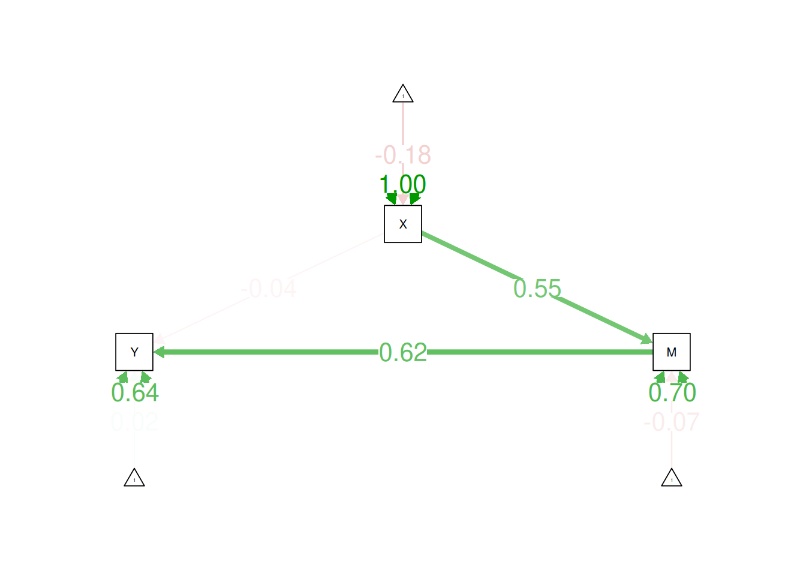
12 Moderation
states <- as.data.frame(state.x77)
names(states)[which(names(states) == "HS Grad")] <- "HS.Grad"
states$Income_rescaled <- states$Income/10012.1 Preparing the Predictors
Make sure to mean-center or orthogonalize predictors before computing the interaction term.
12.1.1 Mean Center Predictors
states$Illiteracy_centered <- scale(states$Illiteracy, scale = FALSE)
states$Murder_centered <- scale(states$Murder, scale = FALSE)12.1.2 Orthogonalized Predictors
Orthogonalizing is residual centering.
states$interaction_notCentered <- states$Illiteracy * states$Murder
states$Illiteracy_orthogonalized <- resid(lm(
data = states,
interaction_notCentered ~ Illiteracy
))
states$Murder_orthogonalized <- resid(lm(
data = states,
interaction_notCentered ~ Murder
))12.2 Compute Interaction Term
states$interaction <- states$Illiteracy_centered * states$Murder_centered # or: states$Illiteracy_orthogonalized * states$Murder_orthogonalized12.3 Model Syntax
moderationModel <- '
Income_rescaled ~ Illiteracy_centered + Murder_centered + interaction + HS.Grad
'12.4 Fit the Model
moderationFit <- sem(
moderationModel,
data = states,
missing = "ML",
estimator = "MLR",
std.lv = TRUE,
fixed.x = FALSE)Warning: lavaan->lav_model_vcov():
The variance-covariance matrix of the estimated parameters (vcov) does not
appear to be positive definite! The smallest eigenvalue (= 1.282391e-16)
is close to zero. This may be a symptom that the model is not identified.12.5 Summary Output
summary(
moderationFit,
fit.measures = TRUE,
standardized = TRUE,
rsquare = TRUE)lavaan 0.6-19 ended normally after 27 iterations
Estimator ML
Optimization method NLMINB
Number of model parameters 20
Number of observations 50
Number of missing patterns 1
Model Test User Model:
Standard Scaled
Test Statistic 0.000 0.000
Degrees of freedom 0 0
Model Test Baseline Model:
Test statistic 33.312 29.838
Degrees of freedom 4 4
P-value 0.000 0.000
Scaling correction factor 1.116
User Model versus Baseline Model:
Comparative Fit Index (CFI) 1.000 1.000
Tucker-Lewis Index (TLI) 1.000 1.000
Robust Comparative Fit Index (CFI) 1.000
Robust Tucker-Lewis Index (TLI) 1.000
Loglikelihood and Information Criteria:
Loglikelihood user model (H0) -570.333 -570.333
Loglikelihood unrestricted model (H1) -570.333 -570.333
Akaike (AIC) 1180.666 1180.666
Bayesian (BIC) 1218.907 1218.907
Sample-size adjusted Bayesian (SABIC) 1156.130 1156.130
Root Mean Square Error of Approximation:
RMSEA 0.000 NA
90 Percent confidence interval - lower 0.000 NA
90 Percent confidence interval - upper 0.000 NA
P-value H_0: RMSEA <= 0.050 NA NA
P-value H_0: RMSEA >= 0.080 NA NA
Robust RMSEA 0.000
90 Percent confidence interval - lower 0.000
90 Percent confidence interval - upper 0.000
P-value H_0: Robust RMSEA <= 0.050 NA
P-value H_0: Robust RMSEA >= 0.080 NA
Standardized Root Mean Square Residual:
SRMR 0.000 0.000
Parameter Estimates:
Standard errors Sandwich
Information bread Observed
Observed information based on Hessian
Regressions:
Estimate Std.Err z-value P(>|z|) Std.lv Std.all
Income_rescaled ~
Illitrcy_cntrd 0.371 1.881 0.197 0.844 0.371 0.037
Murder_centerd 0.171 0.245 0.696 0.486 0.171 0.103
interaction -0.970 0.254 -3.823 0.000 -0.970 -0.355
HS.Grad 0.408 0.149 2.727 0.006 0.408 0.536
Covariances:
Estimate Std.Err z-value P(>|z|) Std.lv Std.all
Illiteracy_centered ~~
Murder_centerd 1.550 0.315 4.924 0.000 1.550 0.703
interaction 0.733 0.323 2.271 0.023 0.733 0.546
HS.Grad -3.171 0.711 -4.459 0.000 -3.171 -0.657
Murder_centered ~~
interaction 2.223 1.620 1.372 0.170 2.223 0.273
HS.Grad -14.259 4.049 -3.522 0.000 -14.259 -0.488
interaction ~~
HS.Grad -7.938 2.987 -2.657 0.008 -7.938 -0.446
Intercepts:
Estimate Std.Err z-value P(>|z|) Std.lv Std.all
.Income_rescald 24.215 7.858 3.081 0.002 24.215 3.981
Illitrcy_cntrd -0.000 0.085 -0.000 1.000 -0.000 -0.000
Murder_centerd -0.000 0.517 -0.000 1.000 -0.000 -0.000
interaction 1.550 0.315 4.924 0.000 1.550 0.696
HS.Grad 53.108 1.131 46.966 0.000 53.108 6.642
Variances:
Estimate Std.Err z-value P(>|z|) Std.lv Std.all
.Income_rescald 19.006 4.200 4.525 0.000 19.006 0.514
Illitrcy_cntrd 0.364 0.066 5.534 0.000 0.364 1.000
Murder_centerd 13.355 1.754 7.614 0.000 13.355 1.000
interaction 4.956 1.462 3.390 0.001 4.956 1.000
HS.Grad 63.933 9.944 6.429 0.000 63.933 1.000
R-Square:
Estimate
Income_rescald 0.48612.6 Estimates of Model Fit
The model is saturated because it has as many estimated parameters as there are data points (i.e., in terms of means, variances, and covariances), so it has zero degrees of freedom. Because the model is saturated, it has “perfect” fit.
fitMeasures(
moderationFit,
fit.measures = c(
"chisq", "df", "pvalue",
"baseline.chisq","baseline.df","baseline.pvalue",
"rmsea", "cfi", "tli", "srmr")) chisq df pvalue baseline.chisq baseline.df
0.000 0.000 NA 33.312 4.000
baseline.pvalue rmsea cfi tli srmr
0.000 0.000 1.000 1.000 0.000 12.7 Residuals of Observed vs. Model-Implied Correlation Matrix
residuals(moderationFit, type = "cor")$type
[1] "cor.bollen"
$cov
Incm_r Illtr_ Mrdr_c intrct HS.Grd
Income_rescaled 0
Illiteracy_centered 0 0
Murder_centered 0 0 0
interaction 0 0 0 0
HS.Grad 0 0 0 0 0
$mean
Income_rescaled Illiteracy_centered Murder_centered interaction
0 0 0 0
HS.Grad
0 12.8 Modification Indices
modificationindices(moderationFit, sort. = TRUE)12.9 Path Diagram
semPaths(
moderationFit,
what = "Std.all",
layout = "tree2",
edge.label.cex = 1.5)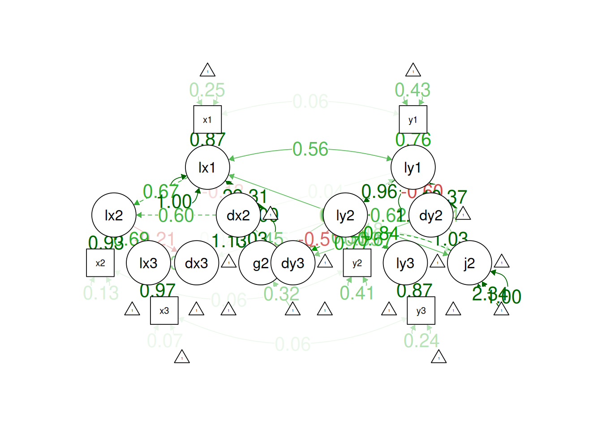
12.10 Interaction Plot
# Created Model-Implied Predicted Data Object
modelImpliedPredictedData <- expand.grid(
Illiteracy_factor = c("Low","Middle","High"),
Murder_factor = c("Low","Middle","High"))
Illiteracy_mean <- mean(states$Illiteracy, na.rm = TRUE)
Illiteracy_sd <- sd(states$Illiteracy, na.rm = TRUE)
Murder_mean <- mean(states$Murder, na.rm = TRUE)
Murder_sd <- sd(states$Murder, na.rm = TRUE)
Illiteracy_centered_mean <- mean(states$Illiteracy_centered, na.rm = TRUE)
Illiteracy_centered_sd <- sd(states$Illiteracy_centered, na.rm = TRUE)
Murder_centered_mean <- mean(states$Murder_centered, na.rm = TRUE)
Murder_centered_sd <- sd(states$Murder_centered, na.rm = TRUE)
modelImpliedPredictedData <- modelImpliedPredictedData %>%
mutate(
Illiteracy = case_when(
Illiteracy_factor == "Low" ~ Illiteracy_mean - Illiteracy_sd,
Illiteracy_factor == "Middle" ~ Illiteracy_mean,
Illiteracy_factor == "High" ~ Illiteracy_mean + Illiteracy_sd
),
Illiteracy_centered = case_when(
Illiteracy_factor == "Low" ~ Illiteracy_centered_mean - Illiteracy_centered_sd,
Illiteracy_factor == "Middle" ~ Illiteracy_centered_mean,
Illiteracy_factor == "High" ~ Illiteracy_centered_mean + Illiteracy_centered_sd
),
Murder = case_when(
Murder_factor == "Low" ~ Murder_mean - Murder_sd,
Murder_factor == "Middle" ~ Murder_mean,
Murder_factor == "High" ~ Murder_mean + Murder_sd
),
Murder_centered = case_when(
Murder_factor == "Low" ~ Murder_centered_mean - Murder_centered_sd,
Murder_factor == "Middle" ~ Murder_centered_mean,
Murder_factor == "High" ~ Murder_centered_mean + Murder_centered_sd
),
interaction = Illiteracy_centered * Murder_centered,
HS.Grad = mean(states$HS.Grad, na.rm = TRUE), # mean for covariates
Income_rescaled = NA
)
Murder_labels <- factor(
modelImpliedPredictedData$Murder_factor,
levels = c("High", "Middle", "Low"),
labels = c("High (+1 SD)", "Middle (mean)", "Low (−1 SD)"))
modelImpliedPredictedData$Income_rescaled <- lavPredictY(
moderationFit,
newdata = modelImpliedPredictedData,
ynames = "Income_rescaled"
) %>%
as.vector()
# Verify Computation Manually
moderationFit_parameters <- parameterEstimates(moderationFit)
moderationFit_parametersintercept <- moderationFit_parameters[which(moderationFit_parameters$lhs == "Income_rescaled" & moderationFit_parameters$op == "~1"), "est"]
b_Illiteracy_centered <- moderationFit_parameters[which(moderationFit_parameters$lhs == "Income_rescaled" & moderationFit_parameters$rhs == "Illiteracy_centered"), "est"]
b_Murder_centered <- moderationFit_parameters[which(moderationFit_parameters$lhs == "Income_rescaled" & moderationFit_parameters$rhs == "Murder_centered"), "est"]
b_interaction <- moderationFit_parameters[which(moderationFit_parameters$lhs == "Income_rescaled" & moderationFit_parameters$rhs == "interaction"), "est"]
b_HS.Grad <- moderationFit_parameters[which(moderationFit_parameters$lhs == "Income_rescaled" & moderationFit_parameters$rhs == "HS.Grad"), "est"]
modelImpliedPredictedData <- modelImpliedPredictedData %>%
mutate(
Income_rescaled_calculatedManually = intercept + (b_Illiteracy_centered * Illiteracy_centered) + (b_Murder_centered * Murder_centered) + (b_interaction * interaction) + (b_HS.Grad * HS.Grad))
# Model-Implied Predicted Data
modelImpliedPredictedData# Plot
ggplot(
data = modelImpliedPredictedData,
mapping = aes(
x = Illiteracy,
y = Income_rescaled,
color = Murder_labels
)
) +
geom_line() +
labs(color = "Murder")12.11 Simple Slopes and Regions of Significance
https://gabriellajg.github.io/EPSY-579-R-Cookbook-for-SEM/week6_1-lavaan-lab-4-mediated-moderation-moderated-mediation.html#step-5-johnson-neyman-interval (archived at https://perma.cc/6XR6-ZPSL)
# Find the min and max values of the moderator
Murder_centered_min <- min(modelImpliedPredictedData$Murder_centered, na.rm = TRUE)
Murder_centered_max <- max(modelImpliedPredictedData$Murder_centered, na.rm = TRUE)
Murder_centered_cutoff1 <- -1.5 # pick and titrate cutoff to help find the lower bound of the region of significance
Murder_centered_cutoff2 <- -1 # pick and titrate cutoff to help find the upper bound of the region of significance
Murder_centered_sd <- sd(modelImpliedPredictedData$Murder_centered, na.rm = TRUE)
Murder_centered_low <- mean(modelImpliedPredictedData$Murder_centered, na.rm = TRUE) - sd(modelImpliedPredictedData$Murder_centered, na.rm = TRUE)
Murder_centered_mean <- mean(modelImpliedPredictedData$Murder_centered, na.rm = TRUE)
Murder_centered_high <- mean(modelImpliedPredictedData$Murder_centered, na.rm = TRUE) + sd(modelImpliedPredictedData$Murder_centered, na.rm = TRUE)
# Extend the moderation model to compute the simple slopes and conditional effects at specific values of the moderator
moderationModelSimpleSlopes <- paste0('
# Regression
Income_rescaled ~ b1*Illiteracy_centered + b2*Murder_centered + b3*interaction + b4*HS.Grad
# Simple Slopes
SS_min := b1 + b3 * ', Murder_centered_min, '
SS_cutoff1 := b1 + b3 * ', Murder_centered_cutoff1, '
SS_cutoff2 := b1 + b3 * ', Murder_centered_cutoff2, '
SS_low := b1 + b3 * ', Murder_centered_low, '
SS_mean := b1 + b3 * ', Murder_centered_mean, '
SS_high := b1 + b3 * ', Murder_centered_high, '
SS_max := b1 + b3 * ', Murder_centered_max, '
')
# Fit the Model
set.seed(52242) # for reproducibility
moderationModelSimpleSlopes_fit <- sem(
model = moderationModelSimpleSlopes,
data = states,
missing = "ML",
estimator = "ML",
se = "bootstrap",
bootstrap = 1000,
std.lv = TRUE,
fixed.x = FALSE)
summary(
moderationModelSimpleSlopes_fit,
#fit.measures = TRUE,
standardized = TRUE,
rsquare = TRUE)lavaan 0.6-19 ended normally after 27 iterations
Estimator ML
Optimization method NLMINB
Number of model parameters 20
Number of observations 50
Number of missing patterns 1
Model Test User Model:
Test statistic 0.000
Degrees of freedom 0
Parameter Estimates:
Standard errors Bootstrap
Number of requested bootstrap draws 1000
Number of successful bootstrap draws 1000
Regressions:
Estimate Std.Err z-value P(>|z|) Std.lv Std.all
Income_rescaled ~
Illtrcy_c (b1) 0.371 2.266 0.164 0.870 0.371 0.037
Mrdr_cntr (b2) 0.171 0.271 0.630 0.528 0.171 0.103
interactn (b3) -0.970 0.307 -3.157 0.002 -0.970 -0.355
HS.Grad (b4) 0.408 0.162 2.521 0.012 0.408 0.536
Covariances:
Estimate Std.Err z-value P(>|z|) Std.lv Std.all
Illiteracy_centered ~~
Murder_centerd 1.550 0.312 4.963 0.000 1.550 0.703
interaction 0.733 0.320 2.290 0.022 0.733 0.546
HS.Grad -3.171 0.700 -4.532 0.000 -3.171 -0.657
Murder_centered ~~
interaction 2.223 1.596 1.393 0.164 2.223 0.273
HS.Grad -14.259 3.925 -3.633 0.000 -14.259 -0.488
interaction ~~
HS.Grad -7.938 2.988 -2.656 0.008 -7.938 -0.446
Intercepts:
Estimate Std.Err z-value P(>|z|) Std.lv Std.all
.Income_rescald 24.215 8.505 2.847 0.004 24.215 3.981
Illitrcy_cntrd -0.000 0.087 -0.000 1.000 -0.000 -0.000
Murder_centerd -0.000 0.524 -0.000 1.000 -0.000 -0.000
interaction 1.550 0.312 4.969 0.000 1.550 0.696
HS.Grad 53.108 1.124 47.235 0.000 53.108 6.642
Variances:
Estimate Std.Err z-value P(>|z|) Std.lv Std.all
.Income_rescald 19.006 3.928 4.838 0.000 19.006 0.514
Illitrcy_cntrd 0.364 0.065 5.586 0.000 0.364 1.000
Murder_centerd 13.355 1.780 7.501 0.000 13.355 1.000
interaction 4.956 1.441 3.439 0.001 4.956 1.000
HS.Grad 63.933 9.923 6.443 0.000 63.933 1.000
R-Square:
Estimate
Income_rescald 0.486
Defined Parameters:
Estimate Std.Err z-value P(>|z|) Std.lv Std.all
SS_min 3.953 2.925 1.351 0.177 3.953 1.348
SS_cutoff1 1.827 2.493 0.733 0.464 1.827 0.570
SS_cutoff2 1.342 2.410 0.557 0.578 1.342 0.392
SS_low 3.473 2.820 1.232 0.218 3.473 1.172
SS_mean 0.371 2.267 0.164 0.870 0.371 0.037
SS_high -2.731 2.064 -1.323 0.186 -2.731 -1.099
SS_max -3.211 2.073 -1.549 0.121 -3.211 -1.274moderationModelSimpleSlopesFit_parameters <- parameterEstimates(
moderationModelSimpleSlopes_fit,
level = 0.95,
boot.ci.type = "bca.simple")
moderationModelSimpleSlopesFit_parametersA simple slope of the predictor on the outcome is considered
significant at a given level of the moderator if the 95% confidence
interval from the bootstrapped estimates of the simple slopes at that
level of the moderator (i.e.,
[ci.lower,ci.upper]) does not include zero. In
this particular model, the predictor (Illiteracy) is not
significant at any of the levels of the moderator (Murder),
because the 95% confidence intervals of all simple slopes include zero,
in this case, likely due to a small sample size (\(N = 50\)) and the resulting low power.
12.12 Johnson-Neyman Plot
As I noted above, the predictor is not significant at any levels of the moderator. Nevertheless, I created a made up Johnson-Neyman plot by specifying the (fictitious) range of significance, for purposes of demonstration. The band around the line indicates the 95% confidence interval of the simple slope of the predictor on the outcome as a function of different levels of the moderator. In reality (unlike in this fictitious example), the regions of significance would only be regions where the 95% confidence interval of the simple slope does not include zero.
The standard error of the slope is the square root of the variance of the slope. The forumula for computing the standard error of the slope is based on the formula for computing the variance of a weighted sum.
The slope of the predictor on the outcome at different levels of the moderator is calculated as (Jaccard & Turisi, 2003):
\[ \text{slope}_\text{predictor} = b_1 + b_3 \cdot Z \]
The standard error of the slope of the predictor on the outcome at different levels of the moderator is calculated as (https://stats.stackexchange.com/a/55973/20338; archived at https://perma.cc/V255-853Z; Jaccard & Turisi, 2003):
\[ \begin{aligned} SE(\text{slope}_\text{predictor}) &= \sqrt{Var(b_1) + Var(b_3) \cdot Z^2 + 2 \cdot Z \cdot Cov(b1, b3)} \\ SE(b_1 + b_3 \cdot Z) &= \end{aligned} \]
where:
- \(b_1\) is the slope of the predictor on the outcome
- \(b_3\) is the slope of the interaction term on the outcome
- \(Z\) is the moderator
The variance of a weighted sum is:
\[ \begin{aligned} Var(\text{slope}_\text{predictor}) &= Var(b_1) + Var(b_3) \cdot Z^2 + 2 \cdot Z \cdot Cov(b1, b3) \\ Var(b_1 + b_3 \cdot Z) &= \end{aligned} \]
The standard error is the square root of the variance. The 95%
confidence interval of the slope is \(\pm\) 1.959964 (i.e.,
qnorm(.975)) standard errors of the slope estimate.
# Create a data frame for plotting
Murder_min <- min(states$Murder, na.rm = TRUE)
Murder_max <- max(states$Murder, na.rm = TRUE)
plot_data <- data.frame(
Murder = seq(Murder_min, Murder_max, length.out = 10000)
)
plot_data$Murder_centered <- scale(plot_data$Murder, scale = FALSE)
# Calculate predicted slopes and confidence intervals
b1 <- moderationModelSimpleSlopesFit_parameters[which(moderationModelSimpleSlopesFit_parameters$label == "b1"), "est"]
b3 <- moderationModelSimpleSlopesFit_parameters[which(moderationModelSimpleSlopesFit_parameters$label == "b3"), "est"]
b1_se <- moderationModelSimpleSlopesFit_parameters[which(moderationModelSimpleSlopesFit_parameters$label == "b1"), "se"]
b3_se <- moderationModelSimpleSlopesFit_parameters[which(moderationModelSimpleSlopesFit_parameters$label == "b3"), "se"]
varianceCovarianceMatrix <- vcov(moderationFit)
b1_var <- varianceCovarianceMatrix["Income_rescaled~Illiteracy_centered","Income_rescaled~Illiteracy_centered"]
b3_var <- varianceCovarianceMatrix["interaction~~interaction","interaction~~interaction"]
cov_b1b3 <- varianceCovarianceMatrix["Income_rescaled~Illiteracy_centered","interaction~~interaction"]
#sqrt((b1_se^2) + ((b3_se^2) * plot_data$Murder_centered^2) + (2 * plot_data$Murder_centered * cov_b1b3))
#sqrt((b1_var) + ((b3_var) * plot_data$Murder_centered^2) + (2 * plot_data$Murder_centered * cov_b1b3))
plot_data$predicted_slopes <- b1 + b3 * plot_data$Murder_centered
plot_data$slope_se <- sqrt((b1_var) + ((b3_var) * plot_data$Murder_centered^2) + (2 * plot_data$Murder_centered * cov_b1b3))
# Calculated the 95% confidence interval around the simple slope
plot_data$lower_ci <- plot_data$predicted_slopes - qnorm(.975) * plot_data$slope_se
plot_data$upper_ci <- plot_data$predicted_slopes + qnorm(.975) * plot_data$slope_se
# Specify the significant range (based on the regions identified in the simple slopes analysis, see "Simple Slopes and Regions of Significance" section above)
plot_data$significant_slope <- FALSE
plot_data$significant_slope[which(plot_data$Murder_centered < -4.2 | plot_data$Murder_centered > 3.75)] <-TRUE # specify significant range
# Specify the significant region number (there are either 0, 1, or 2 significant regions; in such cases, there would be 1, 0 or 1 or 2, or 1 nonsignificant regions, respectively)--for instance, sig from 0-4, ns from 4-12, and sig from 12-16 would be 2 significant regions and 1 nonsignificant region
plot_data$significantRegionNumber <- NA
plot_data$significantRegionNumber[which(plot_data$Murder_centered < -4.2)] <- 1 # specify significant range 1
plot_data$significantRegionNumber[which(plot_data$Murder_centered > 3.75)] <- 2 # specify significant range 2
min(plot_data$Murder[which(plot_data$significant_slope == FALSE)])[1] 4.051215max(plot_data$Murder[which(plot_data$significant_slope == FALSE)])[1] 11.99938ggplot(plot_data, aes(x = Murder, y = predicted_slopes)) +
geom_ribbon(
data = plot_data %>% filter(significant_slope == FALSE),
aes(ymin = lower_ci, ymax = upper_ci),
fill = "#F8766D",
alpha = 0.2) +
geom_ribbon(
data = plot_data %>% filter(significantRegionNumber == 1),
aes(ymin = lower_ci, ymax = upper_ci),
fill = "#00BFC4",
alpha = 0.2) +
geom_ribbon(
data = plot_data %>% filter(significantRegionNumber == 2),
aes(ymin = lower_ci, ymax = upper_ci),
fill = "#00BFC4",
alpha = 0.2) +
geom_line(
data = plot_data %>% filter(significant_slope == FALSE),
aes(x = Murder, y = predicted_slopes),
color = "#F8766D",
linewidth = 2) +
geom_line(
data = plot_data %>% filter(significantRegionNumber == 1),
aes(x = Murder, y = predicted_slopes),
color = "#00BFC4",
linewidth = 2) +
geom_line(
data = plot_data %>% filter(significantRegionNumber == 2),
aes(x = Murder, y = predicted_slopes),
color = "#00BFC4",
linewidth = 2) +
geom_hline(yintercept = 0, linetype = "dashed") +
geom_vline(xintercept = c(4.051215, 11.99938), linetype = 2, color = "#00BFC4") + # update based on numbers above
labs(
title = "Johnson-Neyman Plot",
subtitle = "(blue = significant slope; pink = nonsignificant slope)",
x = "Moderator (Murder)",
y = "Simple Slope of Predictor (Illiteracy)") +
theme_classic()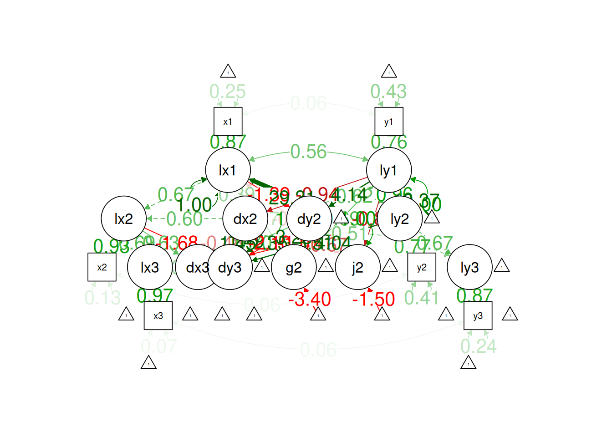
13 Bounded Estimation with Random Starts
For more info, see De Jonckere and Rosseel (2022, 2025).
HS.model <- '
visual =~ x1 + x2 + x3
textual =~ x4 + x5 + x6
speed =~ x7 + x8 + x9
'fit <- cfa(
HS.model,
data = HolzingerSwineford1939,
missing = "ML",
estimator = "MLR",
bounds = "pos.var", # forces all variances of both observed and latent variables to be strictly nonnegative
rstarts = 10, # random starts
verbose = TRUE) # print all outputError in x.noerror[sapply(x.rstarts, "attr", "converged")]: invalid subscript type 'list'14 Power Analysis
15 Path Diagrams
For a list of tools to create path diagrams, see here.
16 Session Info
sessionInfo()R version 4.4.3 (2025-02-28)
Platform: x86_64-pc-linux-gnu
Running under: Ubuntu 24.04.2 LTS
Matrix products: default
BLAS: /usr/lib/x86_64-linux-gnu/openblas-pthread/libblas.so.3
LAPACK: /usr/lib/x86_64-linux-gnu/openblas-pthread/libopenblasp-r0.3.26.so; LAPACK version 3.12.0
locale:
[1] LC_CTYPE=C.UTF-8 LC_NUMERIC=C LC_TIME=C.UTF-8
[4] LC_COLLATE=C.UTF-8 LC_MONETARY=C.UTF-8 LC_MESSAGES=C.UTF-8
[7] LC_PAPER=C.UTF-8 LC_NAME=C LC_ADDRESS=C
[10] LC_TELEPHONE=C LC_MEASUREMENT=C.UTF-8 LC_IDENTIFICATION=C
time zone: UTC
tzcode source: system (glibc)
attached base packages:
[1] stats graphics grDevices utils datasets methods base
other attached packages:
[1] lubridate_1.9.4 forcats_1.0.0 stringr_1.5.1 dplyr_1.1.4
[5] purrr_1.0.4 readr_2.1.5 tidyr_1.3.1 tibble_3.2.1
[9] ggplot2_3.5.1 tidyverse_2.0.0 MBESS_4.9.3 lcsm_0.3.2
[13] semPlot_1.1.6 semTools_0.5-6 lavaan_0.6-19
loaded via a namespace (and not attached):
[1] Rdpack_2.6.2 mnormt_2.1.1 pbapply_1.7-2
[4] gridExtra_2.3 fdrtool_1.2.18 rlang_1.1.5
[7] magrittr_2.0.3 rockchalk_1.8.157 compiler_4.4.3
[10] png_0.1-8 vctrs_0.6.5 reshape2_1.4.4
[13] OpenMx_2.21.13 quadprog_1.5-8 pkgconfig_2.0.3
[16] fastmap_1.2.0 arm_1.14-4 backports_1.5.0
[19] labeling_0.4.3 pbivnorm_0.6.0 rmarkdown_2.29
[22] tzdb_0.4.0 nloptr_2.2.0 xfun_0.51
[25] cachem_1.1.0 kutils_1.73 jsonlite_1.9.1
[28] jpeg_0.1-10 psych_2.4.12 parallel_4.4.3
[31] cluster_2.1.8 R6_2.6.1 bslib_0.9.0
[34] stringi_1.8.4 boot_1.3-31 rpart_4.1.24
[37] jquerylib_0.1.4 Rcpp_1.0.14 knitr_1.49
[40] base64enc_0.1-3 timechange_0.3.0 Matrix_1.7-2
[43] splines_4.4.3 nnet_7.3-20 igraph_2.1.4
[46] tidyselect_1.2.1 rstudioapi_0.17.1 abind_1.4-8
[49] yaml_2.3.10 qgraph_1.9.8 lattice_0.22-6
[52] plyr_1.8.9 withr_3.0.2 coda_0.19-4.1
[55] evaluate_1.0.3 foreign_0.8-88 RcppParallel_5.1.10
[58] zip_2.3.2 pillar_1.10.1 carData_3.0-5
[61] checkmate_2.3.2 stats4_4.4.3 reformulas_0.4.0
[64] generics_0.1.3 hms_1.1.3 munsell_0.5.1
[67] scales_1.3.0 minqa_1.2.8 gtools_3.9.5
[70] xtable_1.8-4 glue_1.8.0 mi_1.1
[73] Hmisc_5.2-2 tools_4.4.3 data.table_1.17.0
[76] lme4_1.1-36 openxlsx_4.2.8 XML_3.99-0.18
[79] grid_4.4.3 sem_3.1-16 rbibutils_2.3
[82] colorspace_2.1-1 nlme_3.1-167 htmlTable_2.4.3
[85] Formula_1.2-5 cli_3.6.4 corpcor_1.6.10
[88] glasso_1.11 gtable_0.3.6 sass_0.4.9
[91] digest_0.6.37 farver_2.1.2 htmlwidgets_1.6.4
[94] htmltools_0.5.8.1 lifecycle_1.0.4 lisrelToR_0.3
[97] MASS_7.3-64